МИНИСТЕРСТВО СТРОИТЕЛЬСТВА
ПРЕДПРИЯТИЙ
НЕФТЯНОЙ И ГАЗОВОЙ ПРОМЫШЛЕННОСТИ
ВСЕСОЮЗНЫЙ
НАУЧНО-ИССЛЕДОВАТЕЛЬСКИЙ ИНСТИТУТ
ПО СТРОИТЕЛЬСТВУ МАГИСТРАЛЬНЫХ ТРУБОПРОВОДОВ
СТРОИТЕЛЬСТВО МАГИСТРАЛЬНЫХ
И ПРОМЫСЛОВЫХ ТРУБОПРОВОДОВ
Контроль качества
и приемка работ
Часть I
ВСН 012-88
Миннефтегазстрой
Москва 1989
Ведомственные строительные нормы «Строительство магистральных и промысловых трубопроводов. Контроль качествам и приемка работ» (часть I) разработаны взамен целого ряда отраслевых нормативных документов, регламентировавших требования к качеству и приемке работ, выполняемых при сооружении и реконструкции трубопроводов.
Требования настоящих норм необходимо соблюдать при контроле качества подготовительных и земляных работ; приемке, отработке и освидетельствовании труб, деталей трубопроводов и запорной арматуры, при контроле качества сварных соединений трубопроводов и качества изоляции; приемке законченных строительством средств электрохимической защиты и т.д.
Настоящие нормы составлены с учетом результатов теоретических и экспериментальных исследований, а также результатов анализа отечественного и зарубежного опыта трубопроводного строительства, полученных в последние годы и, следовательно, не нашедших отражения в СНиП III-42-80, действующих с 1981 г. В связи с этим в случае расхождения требований ВСН (разд. 5 «Контроль качества сварных соединений трубопроводов») с требованиями СНиП III-42-80 в практической работе следует руководствоваться первыми.
РАЗРАБОТАНЫ И ВНЕСЕНЫ
Всесоюзным научно-исследовательским институтом по строительству магистральных трубопроводов
Заместитель директора, канд. техн. наук К.И. Зайцев;
Зав. отделом качества строительства канд. техн. наук В.Ф. Чабуркин;
Исполнители: канд. техн. наук А.С. Болотов (разд. 4); канд. техн. наук Р.Р. Хакимьянов, инженеры М.Н. Каганович, В.Д. Парамонов, кандидаты техн. наук Г.А. Гиллер, И.А. Шмелева, В.И. Хоменко (разд. 5); кандидаты техн. наук Н.П. Глазов, К.Л. Шамшетдинов (разд. 6); инженер В.Г. Селиверстов, канд. техн. наук О.Н. Винклер (разд. 8).
ПОДГОТОВЛЕНЫ К УТВЕРЖДЕНИЮ
Главным научно-техническим управлением Миннефтегазстроя
Зам. начальника Б.С. Ланге
С введением в действие «Строительство магистральных и промысловых трубопроводов. Контроль качества и приемка работ». Часть I утрачивают силу:
«Система показателей качества продукции. Технические средства для контроля качества строительства объектов нефтяной и газовой промышленности. Номенклатура показателей» ОСТ 102-89-83;
«Инструкция по радиографическому контролю сварных соединений трубопроводов различного диаметра» ВСН 2-146-82/ Миннефтегазстрой;
«Инструкция по освидетельствованию стальных труб диаметром 57 ... 1420 мм» ВСН 196-86/Миннефтегазстрой;
«Инструкция по ультразвуковому контролю сварных соединений трубопроводов на строительстве объектов нефтяной и газовой промышленности» ВСН 2-47-81/Миннефтегазстрой;
«Инструкция по техническому расследованию отказов при испытании магистральных трубопроводов» ВСН 2-140-82/Миннефтегазстрой;
«Инструкция по метрологическому обеспечению контроля качества строительства магистральных трубопроводов» ВСН 2-141-82/Миннефтегазстрой;
«Инструкция по контролю качества строительства и техническому надзору при производстве изоляционно-укладочных работ и сооружения средств электрохимической защиты на магистральных трубопроводах» ВСН 150-82/Миннефтегазстрой;
«Инструкция по магнитографическому контролю сварных соединений магистральных трубопроводов» ВСН 176-84/Миннефтегазстрой;
«Инструкция по нормированию технологической точности и метрологического обеспечения производства подготовительных и земляных работ при сооружении магистральных трубопроводов» ВСН 177-84/Миннефтегазстрой;
«Инструкция по технологии контроля качества очистки наружной поверхности трубопровода инструментальными методами» ВСН 178-84/Миннефтегазстрой;
«Инструкция по применению комплекса устройств для неразрушающего контроля сплошности изоляционных покрытий заглубленных трубопроводов» ВСН 210-87/Миннефтегазстрой;
«Методические указания по нормированию технологической точности и метрологического обеспечения производства сварочно-монтажных работ при сооружении магистральных трубопроводов» РД 102-32-85.
СОГЛАСОВАНЫ
Госстрой СССР 22.12.1988 г. Письмо № АЧ 4473-8
Главгосгазнадзор СССР 5.12.1988 г. Письмо № 11-5-2/337
Оргэнергонефть МНП 14.12.1988 г. Письмо № 1015
|
Министерство строительства предприятий нефтяной и газовой промышленности |
Ведомственные строительные нормы |
ВСН 012-88 Миннефтегазстрой |
|
Строительство магистральных и промысловых трубопроводов. Контроль качества и приемка работ |
Взамен: ОСТ 102-89-83; ВСН 2-146-82; ВСН 2-47-81; ВСН 2-140-82; ВСН 2-141-82; ВСН 176-84; ВСН 177-84; ВСН 178-84; ВСН 210-87; РД 102-32-85; ВСН 150-82 |
1.1. Требования настоящих Норм необходимо соблюдать при контроле качества и приемке работ, выполняемых в процессе сооружения новых и реконструкции действующих:
магистральных трубопроводов и ответвлений от них, область распространения которых регламентирована СНиП 2.05.06-85;
трубопроводов компрессорных (КС) и нефтеперекачивающих (НПО) станций, станций подземного хранения газа (СПХГ), дожимных компрессорных станций (ДКС), газораспределительных станций (ГРС), узлов замера расхода газа (УЗРГ), пунктов редуцирования газа (ПРГ), область распространения которых регламентирована СНиП 2.05.06-85, в том числе:
для транспортирования товарной продукции в пределах КС, НПО, СПХГ, ДКС, ГРС и УЗРГ;
межцеховых трубопроводов;
трубопроводов импульсного, топливного и пускового газа газоперекачивающих агрегатов;
|
Внесены Всесоюзным научно-исследовательским институтом по строительству магистральных трубопроводов |
Утверждены
приказом Миннефтегазстроя № 375 |
Срок введения
в действие |
трубопроводов обвязки аппаратов нагнетателей, пылеуловителей, аппаратов воздушного охлаждения, холодильников и др.;
устройств приема и пуска скребка;
трубопроводных систем контрольно-измерительных приборов с главными и вспомогательными трубопроводами;
промысловых трубопроводов, область распространения которых регламентирована ВСН 51-3-85/Мингазпром, ВСН 2.38-85/Миннефтепром, в том числе:
газопроводов-шлейфов, предназначенных для транспортирования газа от скважин месторождений и СПХГ до установок комплексной подготовки газа (УКПГ), установок предварительной подготовки газа (УППГ) и от КС СПХГ до скважин для закачки газа в пласт;
газопроводов, газовых коллекторов неочищенного газа, межпромысловых коллекторов, конденсатопроводов, предназначенных для транспортирования газа и газового конденсата от УКПГ, УППГ до головных сооружений (ГС), ДКС, КС СПХГ, газоперерабатывающих заводов (ГПЗ);
выкидных трубопроводов от нефтяных скважин за исключением участков, расположенных на кустовых площадках скважин до замерных установок;
нефтегазосборных трубопроводов для транспортирования продукции нефтяных скважин от замерных установок до пунктов первой ступени сепарации нефти;
газопроводов для транспортирования нефтяного газа от установок сепарации нефти до установок подготовки газа или до потребителей;
нефтепроводов для транспортирования газонасыщенной или разгазированной, обводненной или безводной нефти от пунктов сбора нефти и ДНС до центральных пунктов сбора;
газопроводов для транспортирования газа к эксплуатационным скважинам при газлифтном способе добычи;
газопроводов для подачи газа в продуктивные пласты с целью увеличения нефтеотдачи;
трубопроводов систем заводнения нефтяных пластов и захоронения пластовых и сточных вод в глубокие поглощающие горизонты;
трубопроводов пресной воды;
ингибиторопроводов для подачи ингибитора к скважинам или другим объектам нефтяных и газовых месторождений;
метанолопроводов;
нефтепроводов для транспортирования товарной нефти от центральных пунктов сбора до сооружений магистрального транспорта нефти;
газопроводов для транспортирования газа от центральных пунктов сбора до сооружений магистрального транспорта газа.
1.2. Настоящие нормы не распространяются на трубопроводы, прокладываемые на территории городов и других населенных пунктов, в морских акваториях, и районах с сейсмичностью свыше 8 баллов, а также на трубопроводы, предназначенные для транспортирования газа, нефти, нефтепродуктов и сжиженных углеводородных газов, оказывающих коррозионные воздействия на металл труб.
1.3. Настоящие нормы разработаны с учетом требований:
СНиП 2.05.06-85 «Магистральные трубопроводы»;
СНиП III-42-80 «Магистральные трубопроводы. Правила производства и приемки работ»;
СНиП 3.01.01-85 «Организация строительного производства»;
СНиП 3.01.04-87 «Приемка в эксплуатацию законченных строительством объектов. Основные положения»;
Кроме требований настоящих ВСН, следует выполнять требования, регламентированные ВСН по отдельным видам работ.
2.1. Контроль качества подготовительных работ следует осуществлять путем систематического наблюдения и проверки соответствия выполняемых работ требованиям проектной документации, а также, кроме перечисленных в п. 1.3, требованиям СНиП 3.01. 03-84 «Геодезические работы в строительстве».
2.2. В процессе подготовительных работ исполнители контролируют:
правильность закрепления трассы с соблюдением следующих требований:
створные знаки углов поворота трассы, которые должны быть установлены в количестве не менее двух за каждое направление угла в пределах видимости;
створные знаки на прямолинейных участках трассы, которые должны быть установлены попарно в пределах видимости, но не реже, чем через 1 км;
створные знаки закрепления прямолинейных участков трассы на переходах через реки, овраги, дороги и другие естественные и искусственные препятствия, должны быть установлены в количестве не менее двух с каждой стороны перехода в пределах видимости;
высотные реперы должны быть установлены не реже чем через 5 км вдоль трассы, кроме устанавливаемых на переходах через водные преграды;
допустимые среднеквадратичные погрешности при построении геодезической разбивочной основы: угловые измерения ± 2; линейные измерения 1/1000; определение отметок ± 50 мм; кроме того проверяют:
соответствие работ по расчистке трассы от леса требованиям проекта и действующих нормативных документов лесного законодательства Союза ССР и союзных республик;
соответствие фактических отметок и ширины планируемой полосы требованиям проекта, особенно в зоне рытья траншей;
качество выполнения водопропускных сооружений;
крутизну откосов при устройстве полок, насыпей, планировке барханов, устройстве нагорных и дренажных канав;
величину уклонов, ширину проезжей части, радиусы поворотов;
наличие разъездов;
несущую способность при устройстве временных и реконструкции постоянных транспортных коммуникаций;
мощность, равномерность и качественный состав плодородного слоя почвы.
2.3. Перед началом строительства генподрядная строительно-монтажная организация должна произвести контроль геодезической разбивочной основы с точностью линейных измерений не менее 1/500, угловых 2¢ и нивелирования между реперами с точностью 50 мм на 1 км трассы.
Трасса принимается от заказчика по акту, если измеренные длины линий отличаются от проектных не более, чем на 1/300 длины, углы не более, чем на 3¢ и отметки знаков, определенные из нивелирования между реперами, - не более 50 мм.
3.1. Способы производства земляных работ на строительстве трубопроводов определяются проектными решениями и должны выполняться в соответствии с требованиями нормативных документов, перечисленных в п. 1.3 и СНиП 3.02.01-87 «Земляные сооружения. Правила производства и приемки работ»;
3.2. Земляные работы должны производиться с обеспечением требований качества и с обязательным операционным контролем, который заключается в систематическом наблюдении и проверке соответствия выполняемых работ требованиям проектной и нормативной документации.
3.3. В зависимости от характера выполняемой операции (процесса) операционный контроль качества осуществляется непосредственно исполнителями, бригадирами, мастерами, прорабами или специальными контролерами.
3.4. Приборы и инструменты (за исключением простейших щупов, шаблонов), предназначенные для контроля качества материалов и работ, должны быть заводского изготовления и иметь утвержденные в установленном порядке паспорта, подтверждающие их соответствие требованиям Государственных стандартов или технических условий.
Характеристика контролируемых параметров подготовительных и земляных работ в процессе строительства трубопроводов приведена в табл. 1.
3.5. Выявленные в процессе контроля дефекты, отклонения от проектов и требований строительных норм и правил или технологических инструкций должны быть исправлены до начала следующих операций (работ).
|
Пределы измерения |
Суммарная погрешность, измерения, % |
Средства измерений |
||
|
минимальный |
максимальный |
|||
|
Отклонение оси траншеи от прямой на длине 100 диаметров, см |
0 |
500 |
1,0 |
Теодолиты, нивелиры, рейка нивелирная |
Глубина траншеи, м |
1,0 |
10,0 |
2,0 |
Рейка нивелирная, лента мерная, отвес механический |
|
Ширина траншеи по низу на прямолинейных участках, м |
1,0 |
3,0 |
5,0 |
Рулетка, лента мерная, рейка нивелирная, нивелир |
|
Ширина траншеи по низу на криволинейных участках, м |
1,0 |
5,0 |
5,0 |
То же |
|
Отклонение дна траншей от проектного положения по вертикали, см |
0 |
50 |
5,0 |
Рейка нивелирная, нивелир |
|
Толщина мягкой подсыпки траншей в скальных грунтах, см |
0 |
50 |
5,0 |
Щуп измерительный, металлический |
|
Толщина мягкой засыпки траншей, см |
0 |
50 |
5,0 |
То же |
3.6. Операционный контроль качества земляных работ должен включать:
проверку правильности переноса фактической оси траншеи и ее соответствие проектному положению;
проверку отметок и ширины полосы для работы роторных экскаваторов (в соответствии с проектами производства работ);
проверку профиля дна траншеи с замером ее глубины и проектных отметок, проверку ширины траншеи по дну;
проверку откосов траншей в зависимости от структуры грунтов, указанной в проекте;
проверку толщины слоя подсыпки на дне траншеи и толщины слоя присыпки трубопровода мягким грунтом;
контроль толщины слоя засыпки и обвалования трубопровода грунтом;
проверку отметок верха насыпи ее ширины и крутизны откосов;
изменение фактических радиусов кривизны траншей на участках поворота горизонтальных кривых.
3.7. Контроль правильности переноса оси траншеи в плане производится теодолитом с привязкой к разбивочной оси.
Ширина полосы для прохода роторных экскаваторов контролируется промером стальной лентой или рулеткой. Отметки полосы контролируются нивелиром.
Ширина траншеи по дну, в том числе на участках, балластируемых армобетонными грузами или винтовыми анкерными устройствами, а также на участках кривых контролируется шаблонами, опускаемыми в траншею.
Расстояние от разбивочной оси до стенки траншеи по дну на сухих участках трассы должно быть не менее половины проектной ширины траншеи, и не превышать ее более чем на 200 мм; на обводненных и заболоченных участках - более чем на 400 мм.
3.8. Фактические радиусы поворота траншеи в плане определяются теодолитом (отклонение фактической оси траншеи от проектной на криволинейном участке не должно превышать ± 200 мм).
3.9. Соответствие отметок дна траншеи проектному профилю проверяется с помощью геометрического нивелирования. В качестве исходных берутся отметки опорных реперов (при необходимости сеть реперов во время выполнения разбивочных работ сгущается таким образом, чтобы расстояние между временными реперами не превышало 2 - 2,5 км). Нивелировка дна траншеи выполняется методами технического нивелирования. Фактическая отметка дна траншеи определяется во всех точках, где указаны проектные отметки в рабочих чертежах.
Фактическая отметка дна траншеи в любой точке не должна превышать проектную и может быть менее ее на величину до 100 мм.
3.10. Если проектом предусмотрена подсыпка рыхлого грунта на дно траншеи, то толщина выравниваемого слоя рыхлого грунта контролируется щупом, опускаемым с бермы траншеи. Толщина выравнивающего слоя должна быть не менее проектной; допуск на толщину слоя определяется требованиями СНиП III-42-80.
Контроль за выполнением земляных работ осуществляет производитель этих работ. По мере выполнения отдельных видов (этапов) земляных работ составляются документы на их приемку (приемка постели и глубины заложения дна траншеи, присыпку, засыпку, рекультивацию и т.п.).
3.11. Если проектом предусмотрена присыпка трубопровода мягким грунтом, то толщина слоя присыпки уложенного в траншею трубопровода контролируется мерной линейкой. Допускается отклонение толщины слоя в пределах, указанных в СНиП III-42-80.
3.12. Отметки рекультивированной полосы контролируют геометрическим нивелированием. Фактическая отметка полосы определяется во всех точках, где в проекте рекультивации земель указана проектная отметка.
Фактическая отметка должна быть не менее проектной и не превышать ее более, чем на 100 мм.
3.13. На рекультивируемых землях с помощью шаблона контролируется высота валика, которая должна быть не менее проектной и при этом не превышать проектную высоту на величину более 200 мм.
Расстояние от оси трубопровода до края насыпи контролируется рулеткой.
Крутизна откосов насыпи контролируется шаблоном.
Уменьшение размеров насыпи против проектных допускается не более, чем на 5 %, за исключением толщины слоя грунта над трубопроводом на участках вертикальных выпуклых кривых, где уменьшение слоя засыпки над трубопроводом не допускается.
3.14. С целью комплексного ведения работ необходимо контролировать сменный темп разработки траншеи, который должен соответствовать сменному темпу изоляционно-укладочных работ. Разработка траншеи в задел, как правило, не допускается.
3.15. Приемку законченных земляных работ осуществляет служба контроля качества с обязательной приемкой по следующим параметрам земляных сооружений:
ширине траншеи по дну;
глубине траншеи;
величине откосов;
профилю дна траншеи;
отметке верха насыпи при засыпке с оформлением соответствующей документации.
3.16. Приемка законченных земляных сооружений осуществляется Государственными комиссиями при сдаче в эксплуатацию всего трубопровода (объекта).
При сдаче законченных объектов строительная организация (генеральный подрядчик) обязана представить заказчику вою техническую документацию, перечень которой оговаривается действующими правилами.
4.1. Приемка труб, деталей и узлов трубопроводов, запорной и распределительной арматуры производится организацией-получателем или специализированной службой входного контроля в присутствии представителя организации получателя в процессе получения указанной продукции от заводов-изготовителей и других поставщиков по месту разгрузки продукции с транспортных средств или после транспортировки ее от мест разгрузки на площадки складирования.
Освидетельствование и отбраковку осуществляет комиссия, образуемая приказом по объединению (тресту). В состав комиссии должны быть включены представители службы материально-технического снабжения и службы контроля. Комиссия имеет право для решения отдельных вопросов привлекать к участию в работе экспертов и представителей других организаций.
4.2. Трубы и другие элементы или узлы трубопроводов по истечении гарантийного срока 12 мес. хранения в местах складирования на промежуточных базовых и притрассовых складах подлежат освидетельствованию с целью определения степени их пригодности для дальнейшего использования.
Освидетельствование должно производиться ежегодно по итогам инвентаризации материальных ресурсов по состоянию на 1 октября.
4.3. Каждая партия труб должна иметь сертификат завода-изготовителя, в котором указывается номер заказа, технические условия или ГОСТ, по которым изготовлены трубы, размер труб и их число в партии, номера плавок, вошедших в партию, результаты гидравлических и механических испытаний, заводские номера труб и номер партии.
Все детали, узлы трубопроводов и элементы запорной (распределительной) арматуры должны иметь технические паспорта.
4.4. При приемке, разбраковке и освидетельствовании труб проверяют:
а) соответствие указанных в сертификатах (паспортах) показателей химического состава и механических свойств металла предусмотренным в соответствующих ТУ или ГОСТ;
б) визуальным контролем:
наличие маркировки и соответствие ее имеющимся сертификатам (паспортам);
отсутствие недопустимых вмятин, задиров и других механических повреждений, металлургических дефектов и коррозии;
отсутствие на торцах забоин, вмятин, наличие разделки под сварку;
в) инструментальным контролем:
толщину стенки по торцам;
овальность по торцам;
кривизну труб;
косину реза торцов труб;
отсутствие расслоений на концевых участках труб;
размеры обнаруженных забоин, рисок, вмятин на теле и на торцах.
4.5. Трубы считаются пригодными при условии, что:
они соответствуют требованиям технических условий и стандартов на поставку и имеют заводскую маркировку и сертификаты;
отклонения наружного диаметра корпуса труб на длине не менее 200 мм от торца не превышают для труб диаметром до 800 мм включительно предельных величин, регламентируемых соответствующими ГОСТами и ТУ, а для труб диаметром свыше 800 мм - ± 2 мм;
отклонения толщины стенки по торцам не превышают предельных значений, регламентируемых соответствующими ГОСТами и ТУ;
овальность бесшовных труб не выводит их наружный диаметр за предельные отклонения, а сварных труб диаметром 426 мм и более не превышает 1 % номинального наружного диаметра (при этом овальность определяется как отношение разности величин наибольшего и наименьшего измеренных диаметров торца обследуемой трубы к номинальному диаметру);
кривизна труб не превышает 1,5 мм на 1 м длины, а общая кривизна - не более 0,2 % длины трубы;
косина реза торцов труб не превышает 2,0 мм;
на концевых участках труб отсутствуют расслоения любого размера, выходящие на кромку или поверхность трубы;
глубина царапин, рисок и задиров на поверхности труб (деталей, арматуры) не превышает 0,2 мм; на теле и на торцах трубы отсутствуют вмятины;
в местах, пораженных коррозией, толщина стенки трубы не выходит за пределы минусовых допусков.
4.6. Трубы могут подвергаться ремонту, если:
глубина рисок, царапин и задиров на поверхности труб не превышает 5 % от толщины стенки;
вмятины на концах труб имеют глубину не более 3,5 % от внешнего диаметра;
глубина забоин и задиров фасок не более 5 мм;
на концевых участках труб имеются расслоения, которые могут быть удалены обрезкой.
Ремонт труб производят в соответствии с требованиями «Строительство магистральных и промысловых трубопроводов. Сварка» ВСН 006-89. Проведение ремонта и заключение о пригодности труб к дальнейшему использованию оформляется актом установленной формы.
4.7. Патрубки запорной и распределительной арматуры, детали трубопроводов, имеющие дефекты, перечисленные в п. 4.6, могут быть подвергнуты ремонту только в случае, если это разрешено заводом-изготовителем.
4.8. Трубы (детали, элементы арматуры) считаются непригодными для сооружения нефтегазопроводов, если они не отвечают требованиям пп. 4.5 и 4.6.
4.9. При измерении наружного диаметра труб, деталей трубопроводов и пр. диаметром до 57 мм включительно за величину диаметра принимают среднее арифметическое измерений диаметра в двух взаимно перпендикулярных направлениях. Измерения проводят штангенциркулем с погрешностью не более 1,0 мм.
Для труб и пр. диаметром более 57 мм значение наружного диметра D (мм) вычисляют по формуле
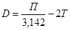
где П - периметр (мм), измеренный рулеткой с точностью 0,5 мм;
Т - толщина ленты рулетки, м.
4.10. Толщину стенки измеряют с торцов труб и деталей штангенциркулем не менее, чем в пяти равномерно распределенных по окружности точках с погрешностью не более 0,1 мм.
В местах, пораженных коррозией; толщину стенки измеряют с помощью ультразвукового толщиномера с точностью не ниже 0,1 мм.
4.11. Полученные при освидетельствовании результаты внешнего осмотра и инструментального контроля заносят в ведомость. В ведомости должны быть отмечены трубы и другие элементы, подлежащие ремонту.
4.12. Трубы (детали, элементы арматуры), прошедшие освидетельствование, должны быть промаркированы.
Маркировка производится на расстоянии 100 - 150 мм от торца несмываемой краской в следующем порядке:
порядковый номер трубы (детали, элементы арматуры);
индекс категории, к которой отнесена труба (деталь, элемент арматуры) после освидетельствования:
«П» - пригодные для использования в газонефтепроводном строительстве;
«Р» - требующие ремонта для дальнейшего использования в газонефтепроводном строительстве;
«У» - пригодные для использования в других отраслях народного хозяйства;
«Б» - не пригодные к дальнейшему использованию.
4.13. Индексом «П» маркируют трубы, отвечающие требованиям п. 4.5 настоящих норм. Индексом «Р» маркируют трубы, подлежащие ремонту в соответствии с требованиями п. 4.6.
Индексом «У» маркируют трубы, если их ремонт не позволил устранить имеющиеся дефекты, и они не отвечают требованиям, изложенным в п. 4.6.
Индексом «Б» маркируют трубы, которые по результатам освидетельствования признаны абсолютно непригодными для дальнейшего использования.
4.14. По результатам освидетельствования комиссия составляет акт, в котором указывают число освидетельствованных труб, число труб, признанных годными для использования при сооружении газонефтепроводов, подлежащих ремонту, и число полностью отбракованных труб. В последнем случае в акте комиссия должна указать возможность их дальнейшего использования в народном хозяйстве. В акте должны быть указаны причины, в результате которых трубы потребовали ремонта или пришли в негодность.
4.15. Материалы освидетельствования труб и предложения о привлечении ответственности лиц, допустивших нарушения в их хранении и использовании, представляются объединению (тресту).
4.16. Итоговые материалы освидетельствования объединениями (трестами) представляются руководству министерства ежегодно до 1 января.
5.1. Для обеспечения требуемого уровня качества необходимо производить:
а) проверку квалификации сварщиков;
б) контроль исходных материалов, труб и трубных заготовок, запорной и распределительной арматуры (входной контроль);
в) систематический операционный (технологический) контроль, осуществляемый в процессе сборки и сварки;
г) визуальный контроль (внешний осмотр) и обмер готовых сварных соединений (для сварных соединений, выполненных двусторонней автоматической сваркой под слоем флюса - дополнительно по макрошлифам);
д) проверку сварных швов неразрушающими методами контроля;
е) механические испытания сварных соединений, выполненных стыковой контактной сваркой оплавлением, сваркой вращающейся дугой и паяных соединений.
Квалификация сварщиков
5.2. К прихватке и сварке стыков трубопроводов в случае применения дуговых методов допускаются сварщики, окончившие специализированные профессионально-технические училища или курсы (школы), имеющие установленной формы удостоверения и аттестованные для сварки соответствующей группы труб по диаметру и (или) соответствующего спецсоединения (технологические трубопроводы диаметром менее 89 мм, захлесты, разнотолщинные элементы, прямые врезки, тройниковые соединения, заварка технологических отверстий).
5.3. К сварке трубопровода в случае применения прессовых методов допускаются операторы электроконтактных установок, прошедшие соответствующую подготовку и имеющие удостоверения на право проведения работ по электроконтактной сварке трубопроводов.
5.4. Аттестацию и проверку квалификации сварщиков осуществляет постоянно действующая комиссия треста под председательством его главного инженера. В состав комиссии должны быть включены инженерно-технические работники служб сварки, контроля, охраны труда и техники безопасности, а также представители профсоюзной организации.
5.5. Комиссия проводит аттестацию и проверку квалификации сварщиков в случаях, объемах и с использованием методик, определяемых требованиями «Строительство магистральных и промысловых трубопроводов. Сварка» ВСН 006-89.
Трубы, детали трубопроводов, запорная и распределительная арматура
5.6. Все трубы, детали трубопроводов, элементы запорной (распределительной) арматуры могут быть приняты в монтаж только после прохождения приемки и (или) освидетельствования на соответствие их требованиям раздела 4 настоящих ВСН, а также требованиям ВСН 006-89.
Сварочные материалы
5.7. Для проведения сварочных работ на строительстве магистральных и промысловых трубопроводов допускается применение электродов, флюсов, проводок, защитных газов только тех марок, которые регламентируются требованиями ВСН 006-89.
5.8. Все поступающие на участок централизованного хранения и подготовки к использованию сварочные материалы подвергают количественному и качественному контролю.
5.9. Контроль сварочных материалов осуществляют работники специализированной службы входного контроля или комиссия, в состав которой входят представители монтажной организации, сварочной службы или ПИЛ (включая сварщика, выполняющего технологические пробы) отдела снабжения.
5.10. При определении качества сварочных материалов устанавливают: наличие сертификатов на каждую партию и марку материалов, а также соответствие маркировки и условного обозначения сварочных материалов в сертификате и на этикетке упаковки; состояние упаковки; состояние поверхности покрытия электродов; состояние поверхности сварочной проволоки; однородность и цвет зерен флюса и т.д.
5.11. Сварочные материалы, которые по результатам входного контроля не соответствуют требованиям нормативных документов, признают некачественными и на них составляется акт в соответствии с положениями ВСН 006-89.
Операционный контроль
5.12. Операционный контроль осуществляют мастера и производители работ. При этом осуществляется проверка правильности и необходимой последовательности выполнения технологических операций по сборке и сварке в соответствии с требованиями ВСН 006-89 и действующих операционных технологических карт.
5.13. При сборке соединений под сварку проверяют:
чистоту полости труб и степень зачистки кромок и прилегающих к ним внутренней и наружной поверхностей;
соблюдение допустимой разностенности свариваемых элементов (труб, труб с деталями трубопроводов и пр.);
соблюдение допустимой величины смещения наружных кромок свариваемых элементов;
величину технологических зазоров в стыках;
длину и количество прихваток.
5.14. Если требуется просушка свариваемых кромок или предварительный подогрев, производят контроль температуры подогрева.
5.15. При операционном контроле в процессе сварки осуществляют наблюдение за обеспечением строгого соблюдения режимов сварки (по показаниям контрольно-измерительной аппаратуры, установленной на сварочных агрегатах, постах, машинах и т.п.), порядка наложения слоев и их количеством, применяемых материалов для сварки корневого и заполняющих слоев, времени перерывов между сваркой корневого шва и «горячем проходом» и других требований технологических карт.
Визуальный контроль и обмер сварных соединений
5.16. Все (100 %) сварные соединения труб, труб с деталями трубопроводов, арматурой и т.д. после их очистки от шлака, грязи, брызг металла, снятия грата подвергают визуальному контролю и обмеру.
Визуальный контроль и обмер производят работники службы контроля (ПИЛ, специализированных управлений по контролю и т.п.).
5.17. При осмотре сварного соединения:
проверяют наличие на каждом стыке клейма сварщика, выполнявшего сварку. Если сварку одного стыка выполняли несколько сварщиков, то на каждом стыке должно быть проставлено клеймо каждого сварщика в данной бригаде, или одно клеймо, присвоенное всей бригаде;
проверяют наличие на одном из концов каждой плети ее порядкового номера;
убеждаются в отсутствии наружных трещин, не заплавленных кратеров и выходящих на поверхность пор.
Примечание. Клеймо сварщика (бригады) и порядковый номер плети (секции) на трубы из сталей с нормативным пределом прочности до 55 кгс/мм2 допускается наносить сваркой электродами с основным покрытием, а на трубы из сталей с нормативным пределом прочности 55 кгс/мм2 и более - только несмываемой краской.
5.18. По результатам обмера сварные соединения, выполненные дуговыми методами, должны удовлетворять следующим требованиям:
величина наружного смещения кромок не должна превышать значений, приведенных в п. 5.90;
глубина подрезов не должна превышать значений, приведенных в п. 5.90;
усиление внешнего и внутреннего швов должно иметь высоту не менее 1,0 м и не более 3,0 мм и плавный переход к основному металлу;
сварной шов облицовочного слоя должен перекрывать основной металл:
при ручной сварке на 2,5 - 3,5 мм;
при сварке порошковой проволокой на 1,5 - 3,5 мм;
сварной шов облицовочного слоя, получаемого при автоматических методах сварки под слоем флюса, должен иметь ширину, указанную в табл. 2;
|
Диаметр трубы, мм |
Толщина стенки трубы, мм |
Ширина облицовочного слоя, мм, не более |
|
|
Двусторонняя автоматическая сварка под флюсом |
720 |
6,0 - 11,0 |
18 ± 3 |
|
11,5 - 15,0 |
20 ± 3 |
||
|
15,5 - 17,0 |
20± 3 |
||
|
17,5 - 22,0 |
20 ± 4 |
||
|
820 |
8,0 - 11,0 |
18 ± 3 |
|
|
11,5 - 15,0 |
20 ± 3 |
||
|
1020 - 1220 |
10,5 - 11,0 |
18 ± 3 |
|
|
11,5 - 17,0 |
18 ± 3 |
||
|
17,5 - 21,0 |
22 ± 4 |
||
|
21,5 - 22,0 |
22 ± 4 |
||
|
22,5 - 26,0 |
24 ± 4 |
||
|
1420 |
15,7 - 20,0 |
22 ± 4 |
|
|
20,5 - 24,0 |
24 ± 4 |
||
|
24,5 - 28,0 |
30 ± 4 |
||
|
28,5 - 32,0 |
32 ± 4 |
||
|
Односторонняя автоматическая сварка под флюсом |
720 - 1420 |
6,0 - 8,0 |
14 ± 4 |
|
8,5 - 12,0 |
20 ± 4 |
||
|
12,5 - 16,0 |
24 ± 4 |
||
|
16,5 - 20,0 |
26 ± 4 |
||
|
20,5 - 28,0 |
32 ± 4 |
||
|
28,5 - 32,0 |
34 ± 4 |
подварочный слой, выполненный ручной сваркой, должен иметь ширину в пределах 8 - 10 мм;
внутренний шов, получаемый при двусторонней автоматической сварке и при автоматической подварке, должен иметь ширину, не превышающую значений, приведенных в табл. 3.
5.19. При двусторонней автоматической сварке, а также односторонней автоматической сварке с автоматической подваркой на макрошлифе, изготовленном из каждого двухсотого стыка, измеряют геометрические размеры швов. Результаты измерений заносят в журнал сварки.
|
Вид разделки кромок по ВСН 006-89 |
Глубина проплавления внутреннего слоя, мм, |
Ширина утреннего шва, мм |
|
|
6,0 |
а |
4 |
15 |
|
9,5 - 11,0 |
а |
6 |
15 |
|
11,1 - 15,2 |
б |
7 |
21 |
|
15,3 - 18,0 |
б |
9 |
26 |
|
18,1 - 21,0 |
в |
10 |
26 |
|
19,7 - 20,5 |
г |
12 |
26 |
|
21,0 - 32,0 |
г |
12 |
28 |
5.20. По результатам измерений, производимых на макрошлифе (рис. 1), сварное соединение должно отвечать следующим требованиям:
смещение осей наружного и внутреннего швов (с) от условной оси стыка не должно превышать 1,0 мм;
величина перекрытия наружного и внутреннего швов (а) должна быть не менее 2,0 мм при толщине стенки трубы до 12,0 мм и не менее 3,0 мм при толщине стенки 12,0 мм и более;
глубина проплавления внутреннего шва (hв) должна быть не более указанной в табл. 3;
ширина внутреннего шва (Вв) должна быть не более указанной в табл. 3.
5.21. В случае отклонения геометрических параметров сварных швов от значений, регламентируемых требованиями п. 5.22, сварку необходимо остановить, отладить оборудование и скорректировать режимы сварки, а 199 стыков, предшествующих вырезанному, считают годными, если по результатам неразрушающего контроля в них отсутствуют недопустимые дефекты.
Рис. 1. Схема определения геометрических параметров сварного шва по макрошлифу:
1 - ось первого (наружного) слоя шва; 2 - ось внутреннего слоя шва; 3 - условная ось стыка; а - перекрытие наружного и внутреннего слоев шва; с - смещение осей наружных и внутреннего слоев шва от условной оси стыка; hв - глубина проплавления внутреннего слоя шва; Вв - ширина внутреннего шва
Неразрушающий контроль
5.22. Сварные соединения трубопроводов, выполненные дуговыми методами сварки, которые по результатам визуального контроля и обмера отвечают требованиям пп. 5.17 - 5.21 настоящих ВСН, а также требованиям ВСН 006-89, подвергают неразрушающему контролю.
Заключения, радиографические снимки, зарегистрированные результаты ультразвуковой дефектоскопии, магнитные ленты и диаграммы фактического режима стыковой сварки оплавлением хранятся в производственной испытательной лаборатории (ПИЛ) до сдачи трубопровода в эксплуатацию.
5.23. К проведению неразрушающего контроля допускаются дефектоскописты, окончившие специализированное профессионально-техническое училище, техникум по соответствующей специальности или курсы по подготовке дефектоскопистов, имеющие документ об окончании учебного заведения и (или) удостоверение установленной формы.
Заключение о качестве проконтролированных соединений имеют право выдавать и подписывать дефектоскописты и инженерно-технические работники, аттестованные по категории «Г» в соответствии с требованиями «Положения об аттестации дефектоскопистов». - М: ВНИИПКтехоргнефтегазстрой, 1986.
Дефектоскописты и инженерно-технические работники подразделений контроля должны проходить повторную аттестацию (переаттестацию).
Повторная аттестация (переаттестация) проводится:
а) периодически, не реже одного раза в 12 мес;
б) при перерыве в работе свыше 6 мес.
В удостоверении должны быть пометки о прохождении аттестации или вкладыши установленной формы.
5.24. Методы и объемы неразрушающего контроля определяются проектом и в зависимости от назначения и диаметра трубопровода, проектного давления транспортируемой по нему среды, а также категории трубопровода и (или) его участков могут быть выбраны по табл. 4.
|
Назначение, вид трубопровода, сварного соединения |
Рабочее давление Р, МПа |
Условный диаметр Ду, мм |
Категория трубопровода и его участков, условия прокладки |
Количество сварных соединений, подлежащих неразрушающему контролю, % |
|||||
|
всего |
радиографический, не менее |
ультразвуковой |
магнитографический |
контроль на герметичность |
|||||
|
1 |
2 |
3 |
4 |
5 |
6 |
7 |
8 |
9 |
10 |
|
1. |
Магистральные трубопроводы |
До 10 включительно |
До 1400 включительно |
В |
100 |
100 |
- |
- |
- |
|
I |
100 |
100 |
- |
- |
- |
||||
|
II |
100 |
25 |
Остальное |
- |
|||||
|
III |
100 |
10 |
Остальное |
- |
|||||
|
IV |
100 |
5 |
Остальное |
- |
|||||
|
На наземных и надземных переходах; на переходах через болота II и III типов и через железные дороги и автомобильные дороги I, II и III категорий во всех районах |
100 |
100 |
- |
- |
- |
||||
|
1020 - 1420 |
В, I, II, III, IV в районах Западной Сибири и Крайнего Севера |
100 |
100 |
- |
- |
- |
|||
|
2. |
Трубопроводы в пределах КС, СПХГ, ДКС, ГРС, УЗРГ и ПРГ: |
||||||||
|
для транспортирования товарной продукции, а также импульсного, топливного и пускового газа; |
До 10 включительно |
57 - 1420 |
В |
100 |
100 |
- |
- |
- |
|
|
14 - 48 |
110 |
110 |
- |
- |
100 |
||||
|
сварные соединения, выполненные враструб |
Любой |
110 |
10 |
- |
- |
100 |
|||
|
3. |
Трубопроводы НПС и НС: |
||||||||
|
для транспортирования товарной продукции по п. 1.1 СНиП III-42-80 |
До 10 включительно |
57 - 1420 |
100 |
100 |
- |
- |
- |
||
|
не указанные в п. 1.1 СНиП III-42-80 |
57 - 1420 |
100 или |
100 |
- |
- |
- |
|||
|
110 |
10 |
100 |
- |
- |
|||||
|
любого назначения |
14 - 48 |
110 |
10 |
- |
- |
100 |
|||
|
сварные соединения, выполненные враструб |
Любой |
110 |
10 |
- |
- |
100 |
|||
|
4. |
Промысловые трубопроводы: |
||||||||
|
а) газопроводы, газопроводы-шлейфы, коллекторы неочищенного газа, межпромысловые коллекторы, газопроводы ПХГ, трубопроводы нефтяного попутного газа, газопроводы газлифтных систем и подачи газа в продуктивные пласты, трубопроводы нестабильного конденсата |
10 < Р £ 32 |
В, I, II |
100 |
100 |
- |
- |
- |
||
|
4 < Р £ 10 |
В, I |
100 |
100 |
- |
- |
- |
|||
|
II, III |
100 |
25 |
Остальное |
- |
|||||
|
2,5 < P £ 4 |
В, I |
100 |
100 |
- |
- |
- |
|||
|
II, III |
100 |
25 |
Остальное |
- |
|||||
|
1,2 < Р £ 2,5 |
В |
100 |
100 |
- |
- |
- |
|||
|
I |
100 |
25 |
Остальное |
- |
|||||
|
и Р £ 1,2 |
II |
25 |
10 |
Остальное |
- |
||||
|
III, IV |
10 |
5 |
Остальное |
- |
|||||
|
б) нефтепроводы, выкидные трубопроводы, нефтепродуктопроводы, нефтегазосборные трубопроводы, трубопроводы стабильного конденсата нефтяных месторождений |
Ду ³ 700 |
В, I |
100 |
100 |
- |
- |
- |
||
|
II |
100 |
25 |
Остальное |
- |
|||||
|
300 £ Ду < 700 |
В |
100 |
50 |
То же |
- |
||||
|
I |
100 |
25 |
" |
" |
- |
||||
|
II |
25 |
10 |
" |
" |
- |
||||
|
III, IV |
10 |
5 |
" |
" |
- |
||||
|
Ду < 300 |
В |
100 |
25 |
" |
" |
- |
|||
|
I |
25 |
10 |
" |
" |
- |
||||
|
II |
10 |
5 |
" |
" |
- |
||||
|
III, IV |
5 |
2 |
" |
" |
- |
||||
|
в) трубопроводы заводнения нефтяных пластов, захоронения пластовых и сточных вод |
Р ³ 10 |
I |
100 |
50 |
" |
" |
- |
||
|
II, III |
100 |
25 |
" |
" |
- |
||||
|
г) трубопроводы пресной воды |
Р ³ 10 |
I |
25 |
10 |
" |
" |
- |
||
|
II |
10 |
5 |
" |
" |
- |
||||
|
III, IV |
5 |
2 |
" |
" |
- |
||||
|
д) метанолопроводы, трубопроводы, транспортирующие вредные среды |
В |
100 |
50 |
Остальное |
- |
- |
|||
I |
100 |
25 |
" |
- |
- |
||||
|
е) ингибиторопроводы |
В |
100 |
25 |
" |
- |
- |
|||
|
I |
25 |
10 |
" |
- |
- |
||||
|
II |
10 |
5 |
" |
- |
- |
||||
|
5. |
Сварные соединения захлестов, ввариваемых вставок и швы приварки арматуры |
200 или |
100 |
100 |
- |
- |
|||
|
200 |
100 |
- |
100 |
- |
|||||
|
6. |
Угловые сварные соединения |
100 или |
- |
100 |
- |
- |
|||
|
100 |
100 |
- |
- |
- |
|||||
Примечания: 1. В начальный период освоения технологии сварки до получения стабильного качества 100 % кольцевых сварных соединений контролируют радиографическим методом независимо от категории трубопроводов.
2. При неудовлетворительных результатах контроля хотя бы одного стыка трубопровода, не подлежащего 100 %-ному контролю, следует проворить тем же методом контроля дополнительно 25 % стыков из числа тех, которые сварены с момента предыдущей проверки.
3. Контролю не подвергают сварные соединения труб и арматуры, выполненные заводами-поставщиками.
4. Для сварных соединений трубопроводов, выполненных полуавтоматической или автоматической сваркой под слоем флюса на трубосварочных базах, допускается комплексный контроль, включающий ультразвуковой контроль в объеме 100 % и дополнительный выборочный радиографический контроль соединений, признанных по результатам ультразвукового контроля годными, в объеме не менее 15 % (но не менее одного стыка) от всех стыков, сваренных в течение одной смены.
5. Для трубопроводов по п. 4 настоящей таблицы на трубосварочных базах о большой номенклатурой типоразмеров труб проектом должно быть предусмотрено увеличение объемов радиографического контроля поворотных сварных соединений до 100 %, при этом требования табл. 4 распространяются на сварные соединения, выполненные неповоротной сваркой.
6. При строительстве промысловых трубопроводов (по п. 4 настоящей таблицы) в условиях сильно заболоченной местности (переходы через болота II и III типов) проектом должно быть предусмотрено увеличение объема контроля сварных соединений трубопроводов по пп. 4, а - г настоящей таблицы до 100 %. В том числе радиографическим методом на участках категорий В и I - не менее 50, II - не менее 25, III и IV - не менее 10 % (но не менее значений, установленных табл. 4).
7. Для трубопроводов по пп. 4, в, г настоящей таблицы при давлениях менее 10 МПа объемы контроля снижаются вдвое.
8. Сварные соединения участков трубопроводов по п. 4 настоящей таблицы на переходах через железные и автомобильные дороги I, II и III категорий должны быть проконтролированы в объеме 100 % радиографическим методом.
9. При невозможности проведения дублирующего контроля сварных соединений захлестов, ввариваемых вставок и швов приварки арматуры ультразвуковым или магнитографическим методами допускается проведение контроля только радиографическим методом при условии, что для просвечивания используют высококонтрастные безэкранные радиографические пленки типа РТ-4М, РТ-5 (или аналогичные им по своим сенситометрическим характеристикам), а чувствительность контроля соответствует второму классу (ГОСТ 7512-82) - при давлении в трубопроводе до 10 МПа включительно и первому - при давлении свыше 10 МПа.
Радиографический контроль
5.25. Общие требования к методу радиографического контроля сварных соединений трубопроводов с использованием рентгеновских аппаратов, источников радиоактивного излучения иридий-192, цезий-137, селен-75, тулий-170 и кобальт-60 и радиографической пленки установлены ГОСТ 7512-82.
5.26. При радиографическом контроле применяют отечественные радиографические пленки типа РТ-5, РТ-4М, РТ-2, РТ-3, РНТМ-1, РТ-1, РТ-СШ.
Допускается применение импортных радиографических пленок, предназначенных для дефектоскопии металлоконструкций.
Характеристики радиографических пленок приведены в справочном прил. 1.
5.27. Для просвечивания используют:
рентгеновские аппараты непрерывного действия;
импульсные рентгеновские аппараты;
гамма-дефектоскопы;
внутритрубные самоходные установки.
Типы рентгеновских аппаратов, гамма-дефектоскопов и внутритрубных самоходных установок приведены в справочном прил. 2.
Допускается применение аппаратуры и оборудования других типов, в том числе зарубежного производства, при условии обеспечения необходимых режимов просвечивания и требуемого качества снимков.
5.28. Если неровности шва, брызги металла и другие внешние дефекты могут затруднить выявление внутренних дефектов в сварном соединении или повредить радиографическую пленку, то поверхность этого соединения должна быть зачищена с использованием средств механической обработки. В остальных случаях специальная подготовка поверхности сварного соединения не требуется.
5.29. Швы, подлежащие контролю, размечают на отдельные участки, длина которых зависит от формата применяемой радиографической пленки (кассет), а затем маркируют несмывающейся краской, обеспечивающей сохранность маркировки до сдачи трубопровода под изоляцию. Достаточна одна метка, которая соответствует началу мерительного пояса или рулонной пленки в следующих случаях:
при использовании вспомогательных мерительных поясов со свинцовыми цифрами, обеспечивающими перенос изображения длины шва на снимки;
при панорамном просвечивании на рулонную пленку с получением изображения контролируемого шва на одном снимке.
5.30. На каждом участке шва, подвергаемом радиографическому контролю, закрепляют эталоны чувствительности, имитаторы (если это необходимо) и свинцовые знаки.
Для определения чувствительности радиографического контроля следует использовать проволочные, канавочные и пластинчатые эталоны чувствительности, форма и размеры которых установлены ГОСТ 7512-82.
Допускается использовать канавочные и проволочные эталоны чувствительности, изготовленные по ГОСТ 7512-75.
Для маркировки радиограмм следует использовать маркировочные знаки в виде цифр и букв русского или латинского алфавитов, а также дополнительные знаки в виде стрелок, тире и т.п. (предпочтительны наборы № 1, 2, 5 и 6), изготовленные из материала, обеспечивающего получение их четких изображений на радиографических снимках.
Для удобства нахождения дефектных участков шва целесообразно использование мерительных поясов со свинцовыми знаками, обеспечивающих разметку сварного соединения.
5.31. Системой свинцовых маркировочных знаков обозначают:
направление укладки кассет или рулонной пленки, соответствующее направлению, указанному стрелкой на стыке (для неповоротных стыков в нитке трубопровода - по часовой стрелке относительно направления хода продукта);
шифр (характеристика) объекта;
номер стыка;
номер пленки;
шифр (клеймо) сварщика или бригады;
шифр дефектоскописта, осуществляющего просвечивание стыка.
Изображение на снимке маркировочных знаков должно быть четким и не накладываться на изображение сварного шва.
Примечания: 1. При сварке стыка несколькими сварщиками, не имеющими общего бригадного клейма, для упрощения маркировки следует использовать условный шифр в виде, например, одной буквы, используемой для обозначения состава сварщиков. Использование данного обозначения состава сварщиков должно быть оформлено протоколом за подписями начальника участка и старшего дефектоскописта. При изменении состава сварщиков шифр должен быть заменен на новый.
2. При повторном (после исправления дефектного участка сварного соединения) контроле в маркировку радиограмм в конце группы маркировочных знаков добавляется порядковый номер проведения повторного контроля «П1» или «П2».
3. Допускается маркировка снимков простым карандашом после проявления по следующим позициям:
номер пленки;
шифр (клеймо) сварщика или бригады;
шифр дефектоскописта.
4. При использовании мерительного пояса допускается устанавливать свинцовыми цифрами номер стыка только на фиксированных по порядку пленках, номера которых в зависимости от диаметра контролируемого трубопровода приведены ниже:
|
Порядковые номера пленок |
|
|
529 |
1, 2, 4 |
|
630 |
1, 3, 5 |
|
720 |
2, 4, 5 |
|
820 |
1, 6, 8 |
|
1020 |
1, 2, 3, 7 |
|
1220 |
1, 5, 7, 10 |
|
1420 |
3, 8, 9, 11 |
5.32. При просвечивании сварных швов без усиления (или со снятым усилением) на их границах необходимо устанавливать свинцовые стрелки или другие ограничители, помогающие определить расположение шва на радиографическом снимке.
5.33. Для измерения глубины дефектов методом визуального (или с помощью фотометров и денситометров) сравнения потемнений изображения дефектов с эталонными канавками или отверстиями следует использовать канавочные эталоны чувствительности или имитаторы, при этом необходимым условием является то, что высота усиления сварного шва должна быть не больше толщины эталона чувствительности или толщины имитатора.
5.34. Форма имитаторов может быть произвольной, глубину и ширину (диаметр) канавок и отверстий следует выбирать по табл. 5 (количество канавок и отверстий не ограничивается). Имитаторы должны иметь паспорта или сертификаты (на партию) со штампом предприятия-изготовителя, в которых обязательно указывается материал, из которого они изготовлены, их толщина, глубины всех канавок (отверстий) и их ширина (диаметр отверстий). С целью более точного распознавания дефектов (типа шлаковых включений) допускается заполнение отверстий имитаторов жидким стеклом.
|
Толщина имитатора h, мм |
Глубина канавок и отверстий hi, мм |
Предельные отклонения глубины, мм |
Ширина канавок (диаметр отверстий), мм |
|
h £ 2 |
0,1 £ hi £ 0,50 |
-0,05 |
1,0 ± 0,1 |
|
2 £ h £ 4 |
0,5 £ hi 2,70 |
-0,10 |
2,0 ± 0,1 |
В рекомендуемом прил. 3 представлены возможные варианты имитаторов.
5.35. Проволочные эталоны чувствительности следует устанавливать непосредственно на сварной шов с направлением проволок поперек шва. Канавочные эталоны и имитаторы необходимо помещать рядом со швом с направлением их вдоль шва.
Пластинчатые эталоны должны быть размещены рядом со швом с направлением эталона вдоль шва или непосредственно на шве с направлением эталона вдоль шва или непосредственно на шве с направлением эталона поперек шва.
При просвечивании кольцевых швов трубопроводов малого диаметра «на эллипс» допускается устанавливать канавочные и пластинчатые эталоны чувствительности и маркировочные знаки рядом со швом вдоль оси трубы, а не вдоль сварного шва.
5.36. При просвечивании трубопроводов с расшифровкой только прилегающих к пленке (к кассетам) участков сварного соединения эталоны чувствительности помещают между контролируемым изделием и кассетами с пленкой.
При просвечивании «на эллипс» эталоны чувствительности располагают между контролируемым изделием и источником излучения.
5.37. При фронтальном просвечивании за несколько экспозиций эталоны чувствительности устанавливают таким образом, чтобы их изображение было расположено на более светлой части снимков на расстоянии 25 - 50 мм от их краев.
При панорамном просвечивании кольцевых швов трубопроводов за одну установку источника излучения изображение эталонов чувствительности может располагаться в любой части снимка по его длине. Аналогично эталонам чувствительности должны быть размещены имитаторы.
При панорамном просвечивании кольцевых швов трубопроводов на рулонную радиографическую пленку за одну установку источника излучения располагают не менее четырех эталонов чувствительности (а в случае необходимости и имитаторов) - по одному на каждую четверть длины окружности сварного соединения.
5.38. Кольцевые швы трубопроводов, переходов и трубных узлов (приварки тройников, отводов) просвечиваются по одной из схем в зависимости от геометрических размеров труб, типа и активности применяемого источника излучения. Схемы просвечивания представлены на рис. 2 - 5.
Рис. 2. Схема панорамного просвечивания изнутри трубы за одну установку источника излучения
Рис. 3. Схема фронтального просвечивания через две стенки за три установки источника излучения
Рис. 4. Схема фронтального просвечивания через две стенки за одну или две установки источника излучения на плоскую кассету (схема просвечивания «на эллипс»)
а
б
Рис. 5. Схема фронтального просвечивания через две стенки за одну установку источника излучения без его смещения относительно сварного шва:
а - для соединения труб; б - для соединения врезок
5.39. Криволинейные швы тройников и отводов можно просвечивать по одной из схем, представленных на рис. 6 - 10, в зависимости от диаметров свариваемых патрубков, их соотношений и условий доступа к сварному шву.
5.40. Количество экспозиций и фокусное расстояние) для схем просвечивания, представленных на рис. 2-10, определяется по формулам, приведенным в табл. 6 и 7.
|
Минимальное расстояние от источника излучения до поверхности контролируемого сварного соединения f, мм |
|
|
Рис. 2 |
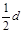 |
|
Рис. 4 |
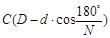 |
|
1,4 С (D - d) |
|
|
Рис. 5 |
2 CD |
|
Рис. 10 |
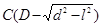 |
где 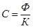 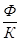
D - наружный диаметр контролируемого сварного соединения, мм;
d - внутренний диаметр контролируемого сварного соединения, мм;
N - число экспозиций;
l - длина снимка, мм;
Рис 6. Схема просвечивания криволинейного шва изнутри трубы за одну установку источника излучения
Рис. 7. Схема просвечивания криволинейного шва изнутри трубы pа несколько установок источника излучения
Ф - максимальный размер фокусного пятна источника излучения, мм;
К - требуемая чувствительность радиографического контроля, мм.
5.41. Смещение источника излучения относительно плоскости сварного шва при контроле по схеме, представленной на рис. 4, составляет 0,35 f - 0,5 f при просвечивании за одну экспозицию и ≈ 0,2 f при просвечивании за две экспозиции (f - фокусное расстояние).
Рис. 8. Схема фронтального просвечивания криволинейных швов врезок малого диаметра за одну установку источника излучения
Рис. 9. Схема фронтального просвечивания криволинейных швов врезок большого диаметра за несколько установок источника излучения
|
Минимальное количество экспозиций (участков) |
|
|
1 |
2 |
|
1 |
|
|
Рис. 4 |
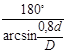 |
|
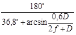 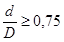 |
|
|
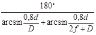 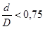 |
|
|
Рис. 5 |
2 |
|
Рис. 10 |
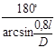 |
Рис. 10. Схемы просвечивания криволинейных швов врезок снаружи трубы за несколько установок источника излучения
5.42. При просвечивании по схемам, представленным на рис. 2, 3 и 5, угол между направлением излучения и плоскостью сварного шва не должен превышать 5°.
5.43. При просвечивании по схемам, представленным на рис. 3, 6-10, угол между направлением излучения и плоскостью контролируемого участка сварного шва в любой его точке не должен превышать 30°.
5.44. Энергию рентгеновского излучения (напряжение на трубке), тип радиоактивного источника, тип радиографической пленки, схему зарядки кассет (с усиливающими экранами или без них), толщину защитных свинцовых экранов (от рассеянного излучения) и схему просвечивания выбирают в зависимости от геометрических размеров контролируемого изделия таким образом, чтобы чувствительность контроля не превышала половины размера по глубине минимального из недопустимых дефектов, но не более значений, приведенных в табл. 8.
|
Толщина контролируемого металла в месте установки эталона чувствительности, мм |
Класс чувствительности |
||
|
1 |
2 |
3 |
|
|
До 5 |
0,10 |
0,10 |
0,20 |
|
Свыше 5 до 9 вкл. |
0,20 |
0,20 |
0,30 |
|
9 до 12 " |
0,20 |
0,30 |
0,40 |
|
12 до 20 " |
0,30 |
0,40 |
0,50 |
|
20 до 30 " |
0,40 |
0,50 |
0,60 |
|
30 до 40 " |
0,50 |
0,60 |
0,75 |
|
40 до 50 " |
0,60 |
0,75 |
1,00 |
|
50 до 70 " |
0,75 |
1,00 |
1,25 |
|
70 до 100 " |
1,00 |
1,25 |
1,50 |
|
100 до 120 " |
1,25 |
1,50 |
2,00 |
Примечания: 1. При давлении в трубопроводе до 10 МПа включительно чувствительность контроля должна соответствовать третьему классу, при давлении свыше 10 МПа - второму.
2. Если на какой-то конкретный объект разрабатывается специальная технология сварки и контроля сварных соединений, то в нормативно-технической документации (инструкции, руководстве и др.) должен быть оговорен класс чувствительности снимка (контроля).
Чувствительность контроля К определяют (КI в мм или КII в %) по изображению на снимке канавочного, проволочного или пластинчатого эталона по формулам:
при использовании канавочных или пластинчатых эталонов чувствительности
или
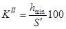
при использовании проволочных эталонов чувствительности
или
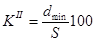
где S - толщина контролируемого металла в месте установки эталона, мм;
S¢ - толщина просвечиваемого металла в мосте установки эталона, т.е. толщина контролируемого металла плюс толщина эталона (S¢ = S + h);
hmin - глубина наименьшей видимой на снимке канавки канавочного эталона (толщина пластинчатого эталона, когда на снимке выявляется отверстие диаметром, равном удвоенной толщине этого эталона), мм;
h - толщина эталона чувствительности, мм;
dmin - диаметр наименьшей видимой на снимке проволоки проволочного эталона, мм.
Чувствительность контроля (чувствительность снимков) при просвечивании «на эллипс» за одну или две экспозиции определяют по отношению к удвоенной толщине стенки трубы:
а) при использовании канавочных или пластинчатых эталонов чувствительности
или
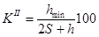
б) при использовании проволочных эталонов чувствительности
или
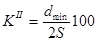
Примечание. При просвечивании «на эллипс» с использованием канавочных эталонов чувствительность снимков может считаться достаточной, если видна следующая меньшая по величине канавка по сравнению с той, которая соответствует допускаемой глубине дефектов.
5.45. Экспозицию (фактор экспозиции) определяют по специальным номограммам.
На рис. 11, 12 приведены номограммы для пленки РТ-СШ. Для определения времени экспозиции при использовании других типов пленок полученные по номограммам результаты необходимо уточнить, принимая во внимание величины относительной чувствительности этих пленок.
Рис. 11. Номограмма для определения времени экспозиции при просвечивании стали рентгеновскими аппаратами непрерывного действия на пленку типа ГТ-СШ (чувствительность 25 I/Р) при фокусном расстоянии 700 мм и при различных напряжениях на трубке рентгеновского аппарата
Рис. 12. Номограммы для определения экспозиции при просвечивании стали на рулонную радиографическую пленку РТ-СШ гамма-источниками:
а - иридий-192; б - цезий-137 при разных фокусных расстояниях:
1 - f = 500 мм; 2 - f = 600 мм; 3 - f = 700 мм
5.46. Если фокусное расстояние отличается от приведенных на рис. 11, 12, то фактор экспозиции можно определять из следующей зависимости:
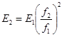
где Е1 и Е2 - факторы экспозиции при фокусных расстояниях f1 и f2 соответственно;
f1 - фокусное расстояние по номограмме (см. рис. 11);
f2 - фокусное расстояние, необходимое при работе.
5.47. При использовании в качестве источника излучения изотопа иридий-192 через каждые 1 - 2 недели необходимо увеличивать время экспозиции делением его первоначального значения на величину поправочного коэффициента (значения коэффициента приведены в табл. 9).
|
Значения коэффициента К |
Время (Т), недели |
Значения коэффициента К |
|
|
1 |
2 |
3 |
4 |
|
0 |
1 |
11 |
0,486 |
|
1 |
0,937 |
12 |
0,455 |
|
2 |
0,877 |
13 |
0,426 |
|
3 |
0,821 |
14 |
0,399 |
|
4 |
0,769 |
15 |
0,374 |
|
5 |
0,720 |
16 |
0,350 |
|
6 |
0,675 |
17 |
0,328 |
|
7 |
0,632 |
18 |
0,307 |
|
8 |
0,592 |
19 |
0,288 |
|
9 |
0,554 |
20 |
0,269 |
|
10 |
0,519 |
21 |
0,252 |
5.48. Суммарная разностенность толщин, просвечиваемых за одну экспозицию, не должна превышать следующих величин (для оптических плотностей 1,5 - 3,0 единиц оптической плотности):
5,5 мм при напряжении на рентгеновской трубке 200 кВ;
7,0 мм при напряжении на рентгеновской трубке 260 кВ;
15 мм при использовании иридия-192;
15 мм при использовании цезия-137.
При наличии оборудования для просмотра снимков, имеющих почернение до 4 е.о.п., суммарная разностенность не должна превышать:
7,5 мм при напряжении на трубке 200 кВ;
9,0 мм при напряжении на трубке 260 кВ;
20,0 мм при использовании иридия-192;
22,0 мм при использовании цезия-137.
Примечания: 1. При просвечивании необходимо использовать технические пленки.
2. Изображение на снимке более тонкого элемента должно иметь максимальную оптическую плотность.
3. При определении чувствительности контроля расчет необходимо вести по той толщине стенки, на которую установлены эталоны чувствительности.
5.49. Снимки, допущенные к расшифровке, должны удовлетворять следующим требованиям:
длина каждого снимка должна обеспечивать перекрытие изображения смежных участков сварного соединения на величину не менее 20 мм, а его ширина - получение изображения сварного шва и прилегающих к нему околошовных зон шириной не менее 20 мм с каждой;
на снимках не должно быть пятен, полос, загрязнений, следов электростатических разрядов и других повреждений эмульсионного слоя, затрудняющих их расшифровку;
на снимках должны быть видны изображения эталонов чувствительности и маркировочных знаков, ограничительных меток, имитаторов и мерительных поясов, если они использовались;
оптическая плотность изображений основного металла контролируемого участка должна быть не менее 2 е.о.п.
При использовании высокочувствительных экранных радиографических пленок снимки должны иметь потемнение, находящееся в пределах 1 - 2 е.о.п. (на участках с изображением основного металла).
Разность оптических плотностей изображений канавочного эталона чувствительности и основного металла в месте установки эталона должна быть не менее 0,3 е.о.п.
Чувствительность снимков должна соответствовать требованиям п. 5.44 настоящих ВСН.
5.50. Расшифровка и оценка качества сварных соединений по снимкам, на которых отсутствуют изображения эталонов чувствительности и имитаторов (если они используются), не допускается, если это специально не оговорено технической документацией.
5.51. Размеры дефектов при расшифровке снимков следует округлять до ближайших значений из ряда чисел: 0,2; 0,5; 0,4; 0,5; 0,6; 0,8; 1,0; 1,2; 1,5; 2,0; 2,5; 2,7; 3,0.
При просвечивании «на эллипс» (см. рис. 4) размеры дефектов участка сварного соединения, расположенного со стороны источника излучения, перед их округлением должны быть умножены на коэффициент:
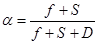
где f - расстояние от источника излучения до поверхности контролируемого участка сварного соединения, мм;
S - толщина контролируемого участка сварного соединения, мм;
D - диаметр трубы, мм.
Примечание. При просвечивании по схемам, представленным на рис. 5, размеры изображений дефектов на коэффициент a не умножаются.
5.52. Результаты расшифровки снимков с указанием их чувствительности и всех выявленных дефектов заносят в заключение установленной формы.
Каждый дефект должен быть отмечен отдельно и иметь подробное описание в соответствии с критериями оценки качества сварных соединений, определяемыми требованиями п. 5.90 настоящих ВСН, с указанием:
символа условного обозначения типа дефекта;
размера дефекта или суммарной длины цепочки и скопления пор или шлаков в миллиметрах (с указанием преобладающего размера дефекта в группе);
количества однотипных дефектов на снимке;
глубины дефектов в миллиметрах или процентах от толщины металла свариваемых элементов трубопровода. Допускается вместо записи глубины дефектов в миллиметрах или процентах указывать с помощью знаков >, = или < величину дефекта по отношению к максимально допустимой для данного сварного соединения.
5.53. Заключение по результатам контроля следует давать отдельно по каждому отрезку снимка длиной 300 мм (для рулонных снимков) и по каждому снимку (для форматных); после анализа всех отрезков или снимков составляют заключение о качестве сварного стыка в целом.
В тех случаях, когда снимки имеют одинаковую чувствительность, а на изображении сварного шва отсутствуют дефекты, их можно группировать и записывать в заключении одной строкой.
5.54. При проведении радиографического контроля на строительстве трубопроводов во избежание поражения электрическим током и опасного воздействия на обслуживающий персонал ионизирующего излучения и вредных газов, образующихся в воздухе под действием излучения, необходимо строго соблюдать правила техники безопасности, установленные действующими нормативными документами.
5.55. В организациях, где проводятся работы с применением ионизирующего излучения, должен осуществляться систематический дозиметрический контроль, который обеспечивает соблюдение норм радиационной безопасности и получение информации о дозе облучения персонала.
Магнитографический контроль
5.56. Магнитографический контроль кольцевых сварных соединений трубопроводов осуществляют в соответствии с требованиями ГОСТ 25225-82.
5.57. Сварные соединения, подлежащие магнитографическому контролю, должны иметь:
а) коэффициент формы усиления шва (отношение ширины валика усиления к его высоте) не менее 7;
б) коэффициент формы сварного шва (отношение ширины валика усиления шва к толщине стенки трубы):
не менее 2,5 для толщин стенок труб до 8 мм;
не менее значений в пределах 2,5 - 2 для толщин от 8 до 16 мм;
не менее 1,8 для толщин стенок труб свыше 16 мм;
в) высоту неровностей (чешуйчатости) на поверхности шва не более 25 % высоты валика усиления, но не свыше 1 мм.
Магнитографическому контролю подвергают также сварные стыки, имеющие ширину валика усиления шва меньшую, чем это обусловлено указанными выше коэффициентами формы сварного шва, если высота валика усиления в соответствии со СНиП III-42-80 колеблется от 1 до 3 мм и значение коэффициента формы усиления шва составляет не менее 10.
5.58. Для магнитографического контроля сварных стыков магистральных трубопроводов из обычных магнитомягких сталей перлитного, бейнитного и мартенситоферритного классов следует применять магнитную ленту типа И4701 (ТУ 6-17-632-74).
Ширина применяемой для магнитографического контроля магнитной ленты должна быть больше ширины валика усиления контролируемых сварных швов не менее чем на 10 мм.
Применяемая магнитная лента не должна иметь надрывов, проколов, местных отслаиваний магнитного слоя, неразглаживающихся морщин и других механических повреждений.
5.59. Для намагничивания сварных соединений применяют намагничивавшие устройства, тип которых в зависимости от диаметра трубы выбирают по табл. 10.
|
Диаметр трубопровода, мм |
Сила тока (А) при толщине стенки контролируемого трубопровода, мм |
|||||||||||
|
2 |
4 |
6 |
8 |
10 |
12 |
14 |
16 |
18 |
20 |
22 |
||
|
НВУ |
57 - 168 |
6 |
12 |
18 |
24 |
28 |
- |
- |
- |
- |
- |
- |
|
ПНУМ-2 |
168 - 377 |
8 |
15 |
21 |
28 |
32 |
36 |
- |
- |
- |
- |
- |
|
ПНУМ-1 |
377 - 1020 |
6 |
12 |
15 |
20 |
24 |
28 |
32 |
- |
- |
- |
- |
|
УНУ |
168 - 1020 |
6 |
12 |
15 |
20 |
24 |
28 |
32 |
- |
- |
- |
- |
|
«Шагун-М1» |
720 - 1420 |
- |
- |
14 |
18 |
24 |
28 |
32 |
36 |
40 |
44 |
- |
|
ЛПМ-К |
1220 |
- |
- |
- |
180 |
215 |
250 |
290 |
325 |
360 |
400 |
- |
|
(кольцевое) |
1420 |
- |
- |
- |
210 |
250 |
295 |
335 |
380 |
420 |
460 |
- |
Примечание. При контроле сварного соединения разностопных труб режим намагничивания следует устанавливать по большей толщине стенки двух стыкуемых труб.
5.60. Для воспроизведения магнитограмм применяют дефектоскопы МДУ-2У, МД-11Г и УВ-30Г с индикацией сигналов воспроизведения магнитограмм сварных стыков на экране электронно-лучевой трубки (ЭЛТ), а также дефектоскопы МД-20Г и МД-40Г с многоканальной регистрацией результатов воспроизведения на электрохимической бумажной ленте.
5.61. Электропитание намагничивающих устройств в трассовых условиях осуществляют от автономных источников постоянного тока. Для этой цели используют переносные станции питания СПП-1 или СПА-1.
При использовании в трассовых условиях передвижной автолаборатории энергопитание намагничивающих устройств всех типоразмеров осуществляют от генератора постоянного тока, смонтированного в кузове лаборатории, с приводом от вала отбора мощности автомобиля.
В отдельных случаях (например, при магнитографическом контроле сварных стыков на трубосварочных базах) для электропитания намагничивающих устройств используют генераторы постоянного тока передвижных сварочных агрегатов.
5.62. Для настройки магнитографических дефектоскопов используют контрольные магнитограммы, изготавливаемые на стандартных образцах предприятия (СОП).
5.62.1. В качестве СОП используют обечайку или ее часть длиной не менее 1/3 окружности), сваренную из двух колец трубы того же диаметра и той же толщины стенки, что и контролируемый трубопровод. Ширину свариваемых колец трубы следует выбирать не менее, чем по 0,5 - 0,6 мм.
5.62.2. СОП должны быть изготовлены для каждого диаметра, толщины стенки и марки стали труб и сварены тем же методом и по той же технологии (сварочные материалы, режим сварки), что и стыковые швы трубопровода, качество которых подлежит контролю магнитографическим методом.
Если на данном объекте строительства трубопровода применяют трубы различной поставки, но из сталей с одинаковыми или близкими структурами, химическим составом и магнитными свойствами, то изготовляют один СОП для труб из этих сталей с одинаковой толщиной стенки.
5.62.3. После сварки стыковые швы СОП должны быть просвечены рентгеновскими или гамма-лучами. По полученным радиографическим снимкам определяют вид, величину и место расположения контрольных дефектов, которые по своим параметрам должны быть близки приведенным в п. 5.90 настоящих ВСН.
5.62.4. СОП должен быть проверен и принят комиссией, составленной из руководящего и инженерно-технического персонала строительно-монтажной организации и подразделения контроля качества.
5.62.5. Контрольные магнитограммы записывают на стыковых швах СОП путем намагничивания последних теми же устройствами и при тех же режимах, которые применяют для контроля сварных соединений трубопроводов на данном объекте строительства.
При каждой смене партии магнитной ленты, применяемой для контроля стыковых швов, должна быть изготовлена новая контрольная магнитограмма из новой партии ленты.
5.62.6. На контрольной магнитограмме должны быть отмечены карандашом границы участков с указанием:
вида и величины дефектов;
толщины основного металла образца;
режима намагничивания,
даты изготовления контрольной магнитограммы;
номера партии магнитной ленты.
5.62.7. Контрольные магнитограммы следует заменять новыми по мере появления на них механических повреждений (отслоение или истирание магнитного слоя, проколы, надрывы и др.).
5.62.8. При использовании одного и того же дефектоскопа с несколькими намагничивающими устройствами с помощью каждого устройства записывают контрольную магнитограмму, по которой из них настраивают чувствительность магнитографического дефектоскопа.
5.63. Настройку чувствительности дефектоскопа (или, по крайней мере, ее проверку) следует проводить каждый раз перед началом работы с ним.
5.64. Перед проведением контроля с поверхности стыкового шва, особенно выполненного ручной электродуговой сваркой, и околошовных зон шириной не менее 20 мм с каждой стороны валика усиления должны быть устранены грубые неровности (чрезмерная чешуйчатость, затвердевшие брызги расплавленного) металла и шлака, а также наплывы), высота которых превышает нормы, указанные в п. 5.57 настоящих ВСН.
Кроме того, с поверхности контролируемых сварных швов и околошовных зон должны быть удалены грязь, снег, лед и другие посторонние наслоения, затрудняющие плотное прилегание магнитной ленты и ухудшающие условия магнитной записи на ней полей дефектов.
5.65. При проведении магнитографического контроля на поверхность подготовленного к контролю сварного шва накладывают с натяжением магнитную ленту так, чтобы она магнитным слоем плотно прилегала к шву, огибая и полностью закрывая по ширине валик усиления, и была расположена симметрично середине стыкового шва по всему его периметру.
На одном из свободных концов (длиной 60 - 70 мм) этой ленты со стороны ее магнитного слоя предварительно записывают простым карандашом следующие данные:
наименование объекта (допускается в сокращенном виде);
диаметр трубопровода и толщину его стенки;
номер стыкового шва и клеймо сварщика;
тип используемого намагничивающего устройства (сокращенно) и режим намагничивания (сила тока);
дату контроля и фамилию дефектоскописта.
Этот конец магнитной ленты совмещают с принятой точкой отсчета на трубе (например, с ее зенитом).
После наложения на сварной шов магнитную ленту плотно прижимают к нему и фиксируют эластичным поясом или другим мягким прижимным устройством.
5.66. Намагничивание контролируемого шва осуществляют на режимах, которые в зависимости от толщины стенки трубы и используемого намагничивающего устройства определяют по табл. 10.
Скорость перемещения намагничивающего устройства не должна превышать 400 мм/с.
5.67. При воспроизведении магнитограммы контролируемого стыка на дефектоскопах (МДУ-2У, МД-11Г или УВ-30Г) с покадровой разверткой яркостной и импульсной индикацией на экране ЭЛТ последовательно просматривают кадры с изображением магнитной записи полей рассеяния смежных участков сварного шва.
Когда появится в кадре изображение магнитного отпечатка поля дефекта, то отключают протяжку магнитной ленты и кадровую развертку.
По изображению яркостной индикации определяют характер дефекта, его расположение по ширине сварного шва и протяженность по длине кадра, а по шкале импульсной индикации - суммарную амплитуду (размах) сигнала от «пика» до «пика» и оценивают относительную величину следующим образом:
а) если амплитуда сигнала от выявленного дефекта ниже браковочного уровня, установленного на экране импульсной индикации при настройке чувствительности дефектоскопа по контрольной магнитограмме, то величину этого дефекта следует считать допустимой;
б) если амплитуда импульса от дефекта превышает браковочный уровень, то величину дефекта следует считать недопустимой.
В процессе воспроизведения магнитограмм контролируемых сварных стыков все обнаруженные дефекты (вид дефекта, его величина и протяженность вдоль шва) отмечают простым карандашом со стороны магнитного слоя ленты.
5.68. При использовании дефектоскопа (МД-20Г или МД-40Г) с непрерывной регистрацией изображения магнитограммы сварного шва и диаграммы величины сигналов от дефектов на электрохимической бумажной ленте результаты контроля расшифровываются после окончания воспроизведения всей магнитограммы шва.
Характер выявленных дефектов, как и на экране яркостной индикации, определяют по форме, ориентации и степени потемнения полутоновых изображений магнитных отпечатков, воспроизводимых на электрохимической бумаге соответствующим каналом регистратора.
5.69. При расшифровке магнитограмм проконтролированного соединения по результатам магнитографирования измеряют:
амплитуду и длительность сигнала от дефекта на экране импульсной индикации или уровень диаграммы на носителе записи регистратора;
протяженность дефекта вдоль сварного шва при заданной чувствительности дефектоскопа;
расстояние между соседними дефектами при заданной чувствительности дефектоскопа;
размер дефекта по ширине шва.
5.70. Результаты магнитографического контроля оформляют в виде заключений установленной формы.
Требования к оформлению заключений аналогичны требованиям к оформлению заключений по результатам радиографического контроля (см. п. 5.52 настоящих ВСН).
Ультразвуковой контроль
5.71. Ультразвуковой контроль сварных соединений трубопроводов осуществляют в соответствии с требованиями ГОСТ 14782-86.
5.72. Контроль может осуществляться в ручном, механизированном или автоматизированном вариантах.
Для ручного контроля и контроля в механизированном варианте сканирования следует применять ультразвуковые эхо-импульсные дефектоскопы и интроскопы УД-11ПУ, УД-12ПУ, УИ-70 или другие (в том числе импортные), близкие указанным по своим техническим характеристикам.
Дефектоскопы должны быть укомплектованы пьезоэлектрическими преобразователями, рассчитанными на рабочую частоту в диапазоне от 1,25 до 5,0 МГц.
Для автоматизированного контроля должно применяться оборудование отечественного и (или) зарубежного производства, по своим техническим характеристикам обеспечивающее выявление всех недопустимых дефектов.
5.73. Поверхность сварного соединения, подлежащего ультразвуковому контролю, должна быть с обеих сторон шва очищена от брызг металла, шлака, окалины, грязи, льда и снега.
Очищать поверхность сварного соединения (за исключением сварного шва) следует шаберами, напильниками, металлическими щетками, шлифмашинками и т.д. После очистки шероховатость подготовленной поверхности должна быть не ниже Rz = 40 мкм по ГОСТ 2789-73
Околошовную поверхность контролируемого соединения необходимо очистить с обеих сторон усиления шва. Ширина зоны очистки с каждой стороны должна быть не менее 2,5 S + 40 мм (где S - толщина стенки, мм).
5.74. Подготовленные для контроля поверхности непосредственно перед прозвучиванием необходимо тщательно протереть ветошью и покрыть слоем контактной смазки. В качестве смазки в зависимости от температуры окружающей среды применяют:
при температурах выше плюс 25 °С - солидол, технический вазелин;
при температурах от плюс 25 до минус 25 °С - моторные и дизельные масла различных марок, трансформаторное масло и т.п.;
при температурах ниже минус 25 °С - моторные и дизельные масла, разбавленные до необходимой консистенции дизельным топливом.
Допускается применение в качестве контактных смазок других веществ (специальные пасты, глицерин, обойный клей и др.) при условии обеспечения стабильного акустического контакта при заданной температуре контроля.
5.75. Подготовку поверхности контролируемых соединений к контролю и удалению контактной смазки после проведения контроля должен выполнять специально выделенный персонал; в обязанности дефектоскописта эти работы не входят.
5.76. Сварные соединения следует контролировать наклонными пьезоэлектрическими преобразователями, рекомендуемые характеристики которых в зависимости от толщины стенки контролируемого соединения можно определить по табл. 11.
5.77. Проверку угла наклона призмы, определение угла ввода, проверку и (или) определение точки выхода ультразвуковых колебаний совмещенных наклонных пьезоэлектрических преобразователей с плоской (непритертой) рабочей поверхностью следует осуществлять по стандартным образцам СО-1, СО-2 и СО-3 по ГОСТ 14782-86.
Угол наклона искателя должен находиться в пределах, регламентируемых в табл. 11.
Положение метки, соответствующей точке выхода ультразвуковых колебаний, не должно отличаться от действительного более чем на 1 мм.
5.78. Проверку нестандартных (в том числе раздельно-совмещенных) преобразователей, а также преобразователей с притертой рабочей поверхностью следует проводить на стандартном образце предприятия (СОП), изображенном на рис. 13.
|
Толщина стенки основного металла контролируемого соединения, мм |
Рабочая частота, МГц |
Угол наклона призмы, град |
Диаметр пьезопластины преобразователя, мм |
Конструкция (тип) пьезопреобразователя |
|
До 6,0 |
5,0 |
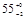 |
5 |
РС |
|
Более 6,0 до 8,0 |
5,0 |
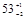 |
6 |
РС; С |
|
Более 8,0 до 12,0 |
5,0; 2,5 |
50±2 |
8 |
РС; С |
|
Более 12,0 до 26,0 |
2,5 |
50±2 |
12 |
С; РС |
|
Более 26,0 до 40,0 |
2,5; 1,25 |
|
12; 18 |
С; РС |
|
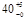 |
Примечания: 1. Допустимый разброс рабочей частоты и диаметра пластины пьезопреобразователя определяется соответствующими техническими условиями на изготовление и поставку пьезопреобразователей и пьезопластин.
2. Конструкция пьезопреобразователя обозначена: РС - раздельно-совмещенный пьезопреобразователь; С - совмещенный пьезопреобразователь.
3. При использовании для контроля импортных пьезопреобразователей, стандартные значения рабочей частоты и угла наклона (ввода) которых отличаются от указанных в табл. 11, следует выбирать пьезопреобразователи с ближайшими большими значениями. Форма и размеры пьезопластин при этом не регламентируются.
5.79. Проверку работоспособности дефектоскопа с пьезопреобразователем и его настройку осуществляют в соответствии с требованиями инструкции по эксплуатации применяемого прибора.
5.80. Чувствительность дефектоскопа с преобразователем должна обеспечивать надежное выявление искусственного углового отражателя, размеры отражающей грани которого в зависимости от толщины стенки контролируемого соединения определяют по табл. 12.
Рис. 13. Стандартный образец предприятия для настройки ультразвуковых дефектоскопов:
а - с угловыми отражателями; б - с цилиндрическими сверлениями
|
Толщина образца S, мм |
Ширина зарубки b, мм |
Высота зарубки h, мм |
|
4,0 - 5,9 |
2,0 |
0,8 |
|
6,0 - 7,5 |
2,0 |
1,0 |
|
8,0 - 11,5 |
2,0 |
1,5 |
|
12,0 - 14,5 |
2,0 |
2,0 |
|
15,0 - 19,5 |
2,5 |
2,0 |
|
20,0 - 25,5 |
3,0 |
2,0 |
|
26,0 - 40,0 |
3,0 |
2,5 |
Примечание. При изготовлении угловых отражателей, указанных в табл. 12, их размеры следую соблюдать с точность ± 0,1 мм.
Искусственные отражатели изготавливаются в стандартных образцах предприятия (см. рис. 13).
Допускается вместо стандартных образцов предприятия с угловым отражателем применять стандартные образцы предприятия с отверстиями с плоским дном, а также с боковыми или вертикальными сверлениями. В этих случаях размеры (диаметр) отражателей должны быть оговорены технологической документацией.
5.81. Контролируемое соединение следует прозвучивать, как правило, прямым и однократно отраженным лучом.
5.82. В ручном варианте контроля прозвучивание сварного соединения выполняют по способу продольного и (или) поперечного перемещения преобразователя при постоянном или автоматически изменяющемся угле ввода луча.
Шаг поперечного перемещения преобразователя не должен превышать половины ширины его призмы. Пределы перемещения искателя должны обеспечивать прозвучивание всего сечения шва.
При механизированном и автоматизированном контроле способ сканирования определяется конструкцией акустической системы применяемого оборудования.
5.83. Признаком обнаружения дефекта при ручном контроле служит появление на экране дефектоскопа импульса в соответствующей зоне развертки и (или) срабатывание других индикаторов дефектоскопа (светового или звукового).
При появлении указанных сигналов путем определения координат отражающей поверхности устанавливают принадлежность обнаруженного дефекта контролируемому шву.
При использовании оборудования для механизированного и автоматизированного контроля локализацию дефекта осуществляют по соответствующим методикам.
5.84. При обнаружении дефекта производят определение следующих его характеристик:
амплитуду эхо-сигнала от дефекта;
наибольшую глубину залегания дефекта в сечении шва;
условную протяженность дефекта;
суммарную условную протяженность дефектов на оценочном участке.
5.84.1. Амплитуду эхо-сигнала от дефекта измеряют следующим образом. С помощью регуляторов «Ослабление» устанавливают высоту сигнала на экране дефектоскопа равной 20 мм. Показания аттенюатора в этом случае и являются амплитудой измеряемого сигнала (в дБ).
5.84.2. Наибольшую глубину залегания дефектов (в мм) определяют в соответствии с инструкцией по эксплуатации применяемого дефектоскопа.
5.84.3. Условную протяженность дефекта (в мм) измеряют при поисковой чувствительности по длине зоны между крайними положениями искателя, перемещаемого вдоль шва и ориентированного перпендикулярно к нему. Крайними положениями считают те, при которых амплитуда эхо-сигнала от дефекта уменьшается до 10 мм.
Примечание. При использовании дефектоскопов, не имеющих электронно-оптических индикаторов, за крайние положения преобразователя считают те, в которых наблюдается появление и исчезновение звукового (светового) сигнала.
5.84.4. Условное расстояние между дефектами измеряют расстоянием между крайними положениями искателя, при которых была определена условная протяженность двух рядом расположенных дефектов.
5.84.5. Суммарную условную протяженность дефектов на оценочном участке (в мм) определяют как сумму условных протяженностей дефектов, обнаруженных на этом участке.
5.85. Дефекты сварных соединений по результатам ультразвукового контроля относят к одному из следующих видов:
а) непротяженные (одиночные поры, компактные шлаковые включения);
б) протяженные (трещины, непровары, неоплавления, удлиненные шлаки);
в) цепочки и скопления (цепочки и скопления пор и шлака).
5.85.1. К непротяженным относят дефекты, условная протяженность которых не превышает значений, указанных в табл. 13. Этими дефектами могут быть одиночные поры или неметаллические включения.
|
Условная протяженность дефекта, мм |
|
|
4,0 - 5,5 |
5 |
|
6,0 - 7,5 |
5 |
|
8,0 - 11,5 |
10 |
|
12,0 - 5,5 |
15 |
|
26,0 - 40,0 |
15 |
5.85.2. К протяженным относят дефекты, условная протяженность которых превышает, значения, указанные в табл. 13. Этими дефектами могут быть одиночные удлиненные неметаллические включения и поры, непровары (несплавления) и трещины.
5.85.3. Цепочкой и скоплением считают три и более дефекта, если при перемещении искателя соответственно вдоль или поперек шва огибающие последовательностей эхо-сигналов от этих дефектов при поисковом уровне чувствительности пересекаются (не разделяются). В остальных случаях дефекты считают одиночными.
5.86. По результатам ультразвукового контроля годным считают сварное соединение, в котором отсутствуют:
а) непротяженные дефекты, амплитуда эхо-сигнала от которых превышает амплитуду эхо-сигнала от контрольного отражателя в СОП, или суммарная условная протяженность которых в шве превышает 1/6 периметра этого шва;
б) цепочки и скопления, для которых амплитуда эхо-сигнала от любого дефекта, входящего в цепочку (скопление), превышает амплитуду эхо-сигнала от контрольного отражателя в СОП или суммарная условная протяженность датчиков, входящих в цепочку (скопление), более 30 мм на любые 300 мм шва;
в) протяженные дефекты в сечении шва, амплитуда эхо-сигнала от которых превышает амплитуду эхо-сигнала от контрольного отражателя в СОП, или условная протяженность которых более 50 мм, или суммарная условная протяженность которых более 50 мм на любые 300 мм шва;
г) протяженные дефекты в корне шва, амплитуда эхо-сигналов от которых превышает амплитуду эхо-сигналов от контрольного отражателя в СОП или условная протяженность такого дефекта превышает 1/6 периметра шва.
5.87. Результаты ультразвукового контроля оформляют в виде заключения установленной формы. К заключению должна быть приложена схема проконтролированного соединения с указанием на ней мест расположения выявленных дефектов.
5.87.1. При описании результатов контроля следует каждый дефект (или группу дефектов) указывать отдельно и обозначать в приведенной ниже последовательности:
буквой, определяющей вид дефекта по протяженности;
цифрой, определяющей наибольшую глубину залегания дефекта, мм;
цифрой, определяющей условную протяженность дефекта, мм;
буквой, определяющей качественно признак оценки допустимости дефекта по амплитуде эхо-сигнала.
5.87.2. Для записи необходимо применять следующие обозначения:
А - непротяженные дефекты;
Е - протяженные дефекты;
В - цепочки и скопления;
Г - дефект, амплитуда эхо-сигнала от которого равна или менее допустимых значений;
Н - дефект, амплитуда эхо-сигнала от которого превышает допустимое значение.
Условную протяженность для дефектов типа А не указывают.
В сокращенной записи числовые значения отделяют одно от другого и от буквенных обозначений дефисом.
Контроль на герметичность
5.88. Контроль сварных швов на герметичность методом химических реакций осуществляют следующим образом:
перед контролем сварные соединения тщательно очищают от шлака и грязи (сварное соединение считается пригодным для контроля, если нанесенный на него спирто-водный раствор фенолфталеина не изменяет свой цвет);
на подвергаемые контролю сварные соединения наносят спирто-водный раствор фенолфталеина, имеющий молочный цвет;
внутри контролируемого трубопровода создается давление воздушно-аммиачной пробной смеси; аммиак в количестве не менее 1 % от объема воздуха (в составе смеси при нормальном давлении) закачивают при последующем повышении давления до 1,25 рабочего;
контролируемый участок трубопровода (или контролируемое изделие) выдерживают в течение 10 мин.
5.88.1. В местах наличия сквозных дефектов индикаторный раствор изменяет окраску на ярко-красную с фиолетовым оттенком.
5.88.2. Места расположения дефектов отмечают краской и после полного удаления воздушно-аммиачной среды сварные швы ремонтируют (а при наличии трещин - вырезают).
5.88.3. При испытаниях применяют материалы:
Спирто-водный раствор фенолфталеина (в весовых %):
Фенолфталеин 4,0
Спирт ректификат или сырец 40,0
Вода 56,0
Пробным веществом является газообразный аммиак (его получают из сжиженного аммиака, поставляемого в баллонах).
5.88.4. Результаты контроля на герметичность методом химических реакций фиксируют в специальном журнале с указанием наименования проверяемого сварного соединения, вида соединения (стыковое, враструб и т.д.), диаметра и толщины сваренных труб, протяженности или количества швов (для однотипных соединений), вида и количества обнаруженных сквозных дефектов (поры, трещины и др.), величины созданного давления воздушно-аммиачной среды и концентрации аммиака в ней, вида применяемого индикаторного раствора, температуры окружающего воздуха, фамилии сварщика и оператора, даты проведения сварки и контроля, результатов проверки сварных швов после ремонта дефектных участков.
5.89. Перед испытанием на герметичность капиллярным методом (смачивание керосином) сварные швы должны быть тщательно очищены от шлака и загрязнений.
5.89.1. Если сварные швы по тем или иным причинам находились в контакте с водой, то они должны быть протерты сухой ветошью и просушены при температуре 100 °С.
5.89.2. С целью повышения контрастности керосина рекомендуется окрасить его с помощью красителя «Судан-Ш» (ТУ 6-09-3234-78). Для этого в 1000 см3 керосина добавляют 3 г красителя. После тщательного перемешивания нерастворившуюся часть красителя необходимо отфильтровать.
5.89.3. В качестве индикаторной жидкости применяют осветительный керосин.
5.89.4. В качестве проявителя применяют: суспензию мела в воде (350 - 400 г мела на 1000 см3 воды); суспензию мела в спирте (350 - 400 г мела на 1000 см3 этилового технического или гидролизного спирта марки А). Второй состав рекомендуется применять в условиях отрицательных температур.
5.89.5. Ту сторону сварных швов, с которой удобнее производить устранение сквозных дефектов, окрашивают тонким слоем меловой суспензии. Нанесение суспензии рекомендуется производить с помощью пневматического краскораспылителя. При этом расстояние распылительного сопла до сварного стыка должно быть таким, чтобы при соприкосновении меловой суспензии с поверхностью сварного соединения суспензия была почти сухой.
5.89.6. После высыхания меловой суспензии противоположная сторона шва обильно смачивается керосином 3 - 4 раза.
5.89.7. Керосин можно наносить и под давлением. Для подачи керосина под давлением можно использовать бачок керосинореза, краскопульта и подобные им устройства.
5.89.8. Время выдержки сварных соединений (продолжительность испытания) после смачивания их керосином должно быть не менее 12 ч при положительной температуре и не менее 24 ч при отрицательной. Время выдержки сокращается до 1,5 - 2 ч, если швы перед смачиванием их керосином подогреты до температуры 60 - 70 °С.
5.89.9. В местах сквозных дефектов (пор, трещин, непроваров и др.) на окрашенной мелом поверхности сварных швов образуются индикаторные пятна.
5.89.10. Применение керосина позволяет зафиксировать индикаторные пятна на продолжительное время (несколько суток). Керосин наиболее эффективно применять при контроле в жаркую погоду, когда индикаторная жидкость быстро испаряется.
5.89.11. Наблюдение за сварным соединением нужно вести с момента начала нанесения на него керосина. Наиболее быстрый рост индикаторных пятен происходит в течение 15 мин после выхода керосина на поверхность шва со слоем меловой суспензии.
5.89.12. Места сквозных дефектов отмечают краской и после их устранения проверяют вновь.
5.89.13. Результаты контроля капиллярным методом фиксируют в специальном журнале с указанием наименования проверенного сварного соединения, вида соединения, диаметра и толщины сваренных труб, вида и количества обнаруженных сквозных дефектов, условий смачивания сварных швов керосином, температуры окружающего воздуха, фамилии и разряда сварщика, даты проведения сварки и контроля, технологии устранения дефектов сварного шва, результатов, проверки дефектных мест после их исправления.
Оценка качества сварных соединений, выполненных дуговыми методами сварки
5.90. Проконтролированные неразрушающими методами сварные соединения считаются годными, если в них не обнаружено дефектов, величина, количество и плотность распределения в шве которых превышают значения, приведенные в табл. 14.
|
Условные обозначения |
Схематическое изображение дефекта |
Допустимые размеры дефектов сварного шва |
|||||||||||
|
Трубопроводы КС и НПС |
Магистральные трубопроводы |
Промысловые трубопроводы |
|||||||||||
|
в сечении |
в плане |
глубина |
длина |
длина на 300 |
глубина |
длина |
длина на 300 |
глубина |
длина |
длина на 300 |
|||
|
Поры |
сферические, радиальные |
Аа |
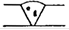 |
0,2 S при l ³ 5d |
50 мм |
Максимально допустимая суммарная площадь проекций пор на радиографическом снимке не должна превышать 5 % площади участка, ширина которого равна S, а длина - 50 мм |
Максимально допустимая суммарная площадь проекций пор на радиографическом снимке не должна превышать 5 % площади участка, ширина которого равна S, а длина - 50 мм |
||||||
|
удлиненные |
|||||||||||||
|
цепочки |
Ав |
0,1 S |
2 S, но не более 30 мм |
30 мм |
|||||||||
|
скопление |
Ас |
||||||||||||
|
канальная |
Аk |
не допускаются |
0,25 S, но не более 3 мм |
1 S, но не более 30 мм |
30 мм |
||||||||
|
Шлаковые включения |
компактные |
Ва |
0,1 S |
0,5 S, но не более 5 мм |
50 мм |
0,1 S |
0,5 S, но не более 7 мм |
50 мм |
0,1 S |
0,5 S, но не более 7 мм |
50 мм |
||
|
удлиненные |
Вd |
не допускаются |
2 S, но не более 50 мм |
2 S, но не более 50 мм |
|||||||||
|
цепочка |
Вв |
0,1 S |
2 S, но не более 30 мм |
30 мм |
2 S, но не более 30 мм |
30 мм |
2 S, но не более 30 мм |
30 мм |
|||||
|
скопление |
Вс |
||||||||||||
|
Непровары, несплав ления |
в корне шва |
Да |
0,05 S, но не более 1 мм |
2 S, но не более 30 мм |
30 мм |
0,1 S, но не более 1 мм |
2 S, но не более 50 мм |
50 мм |
0,1 S, но не более 1 мм |
2 S, но не более 50 мм |
50 мм |
||
|
между валиками |
Дв |
не допускаются |
2 S, но не более 30 мм |
30 мм |
2 S, но не более 30 мм |
30 мм |
|||||||
|
по разделке |
Дс |
||||||||||||
|
Трещины |
вдоль шва |
Еа |
не допускаются |
не допускаются |
не допускаются |
||||||||
|
поперек шва |
Ев |
||||||||||||
|
разветвленные |
Ес |
||||||||||||
|
Наружные дефекты |
утяжина |
Fа |
0,2 S, но не более 1 мм |
50 мм |
1/6 периметра шва |
Максимально допустимая глубина - до 2 мм, при этом плотность изображения на радиографическом снимке не должна превышать плотности изображения основного металла |
|||||||
|
превышение проплава |
Fв |
3 мм |
1S |
30 мм |
5 мм |
50 мм |
50 мм |
5 мм |
50 мм |
50 мм |
|||
|
подрез |
Fс |
0,05 S, но не более 0,5 мм |
150 мм |
150 мм |
0,1 S, но не более 0,5 мм |
150 мм |
150 мм |
0,1 S, но не более 0,3 мм |
150 мм |
150 мм |
|||
|
Дефект сборки |
Смещение кромок |
Fd |
0,2 S, но не более 3 мм |
0,2 S, но не более 3 мм |
0,2 S, но не более 0,5 мм |
||||||||
|
0,25 S, но не более 4 мм |
300 мм, но не более одного на стык |
0,25 S, но не более 4 мм |
300 мм, но не более одного на стык |
||||||||||
Примечания:
1. В таблице приняты следующие обозначения: S - толщина стенки трубы; l - расстояние между соседними порами; d - максимальный размер поры.
2. К цепочке относят такие дефекты, которые расположены на одной линии в количестве не менее 3 с расстоянием между ними, меньшим пятикратного размера дефекта.
3. К скоплению относя дефекты с кучным расположением в количестве не менее 3 с расстоянием между ними, меньшим пятикратного размера дефекта.
4. Во всех случаях максимальный диаметр поры не должен превышать 0,25 S, но не более 3 мм.
5. Допустимая плотность распределения пор с площадью их проекций, равной 5 %:
6. В стыках трубопроводов диаметром 1020 мм и более, выполненных с внутренней подваркой, непровары в корне шва не допускаются.
7. При S £ 5 мм допускается непровар в корне шва глубиной до 0,2 S при смещении кромок величиной до 0,1 S.
8. Подрезы на участках сварных швов, имеющих смещения кромок величиной свыше 0,2 S, не допускаются.
9. В сварных швах труб с толщиной стенки 8 мм и менее допускаются смещения кромок величиной до 0,4S, но не более 2 мм.
10. Во всех случаях суммарная протяженность совокупности допустимых по глубине внутренних дефектов на любые 300 мм шва не должна превышать 50 мм (но не более 1/6 периметра шва).
Контроль сварных соединений, выполненных стыковой контактной сваркой оплавлением
5.91. Сварные соединения, выполненные стыковой контактной сваркой оплавлением, подвергают контролю в следующих объемах:
по зарегистрированным параметрам сварки - 100 %;
внешним осмотром и обмером - 100 %;
механическим испытаниям - 1 % - 0,2 %.
Примечание. Проведение механических испытаний в объеме менее 1 % должно быть согласовано с ВНИИСТом.
5.91.1. По результатам контроля параметров сварки сварные соединения считают годными, если отклонения фактических режимов сварки, зарегистрированных на диаграммной ленте, не превышают значений, определяемых требованиями ВСН 006-89.
5.91.2. Сварные соединения, признанные годными по результатам контроля параметров сварки, подвергают внешнему осмотру и обмеру. При этом сварные соединения считают годными, если:
смещение кромок после сварки не превышает 25 % толщины стенки (и во всех случаях не более 3,0 мм). Допускаются местные смещения на длине до 20 % периметра стыка, величина которых не превышает 30 % толщины стенки (но не более 4,0 мм);
усиление шва после снятия внутреннего и наружного грата по высоте не превышает 3,0 мм. При снятии грата не допускается уменьшение толщины стенки трубы.
Примечание. Высоту внутреннего усиления определяют на стыках, вырезаемых для проведения механических испытаний.
5.91.3. Сварные соединения труб диаметром от 57 до 89 мм подвергают механическим испытаниям на растяжение и сплющивание.
Сварные соединения труб диаметром от 108 до 1420 мм подвергают испытаниям на растяжение и изгиб.
Испытания проводят в соответствии с требованиями ГОСТ 6996-66 и СНИП III-42-80 на образцах, вырезанных из сварных соединений.
5.91.4. Временное сопротивление разрыву сварного соединения, определенное на разрывных образцах со снятым усилением, должно быть не меньше нормативного значения временного сопротивления разрыву металла труб.
Среднее арифметическое значение угла изгиба образцов должно быть не менее 70°, а его минимальное значение - не ниже 40°.
При подсчете среднего значения все углы больше 110° принимаются равными 110°.
Величина просвета между сжимающими плитами при появлении первой трещины на поверхности образца, испытываемого на сплющивание, должна быть не более четырехкратной толщины стенки трубы. Появление на кромках и на поверхности образца надрывов длиной до 5 мм, не развивающихся в трещину в процессе дальнейших испытаний до полного сплющивания образца, браковочным признаком не является.
5.91.5. При неудовлетворительных результатах механических испытаний по пп. 5.91.3 и 5.91.4 необходимо:
сварку прекратить - установить причину неудовлетворительного качества стыка;
весь участок трубопровода, сваренный с момента последней проверки, монтажной организацией в присутствии представителей технадзора заказчика подвергнуть силовому воздействию на изгиб в соответствии с требованиями СНиП III-42-80.
Контроль паяных соединений
5.92. Паяные соединения трубопроводов подвергают: контролю по зарегистрированным параметрам режима пайки; контролю внешним осмотром и обмером; механическим испытаниям - в объемах, предусмотренных п. 5.91 настоящих ВСН.
5.92.1. По результатам контроля параметров пайки контролируемые соединения считают годными, если отклонения фактических режимов пайки, зарегистрированные на диаграммной ленте, не превышают значений, определяемых требованиями ВСН 006-89.
5.92.2. По результатам внешнего осмотра и обмера паяные соединения считают годными, если:
на наружной поверхности стыка отсутствуют наплывы припоя, по высоте превышающие 3,0 мм;
незаполнение соединительного зазора припоем по глубине не превышает 1,5 мм, а суммарная длина не превышает 1/3 периметра стыка;
величина наружного смещения кромок по периметру стыка не превышает 1,0 мм и при этом обеспечивается плавный переход поверхности шва к основному металлу.
5.92.3. Паяные соединения труб диаметром от 57 до 89 мм подвергают механическим испытаниям на растяжение и сплющивание, а соединения труб диаметром от 108 до 219 мм - на растяжение и изгиб.
Испытания проводят в соответствии с. требованиями ГОСТ 6996-66.
5.92.4. По результатам механических испытаний паяные стыки должны соответствовать требованиям п. 5.91.4 настоящих ВСН.
5.92.5. При неудовлетворительных результатах механических испытаний следует:
пайку прекратить и установить причину неудовлетворительного качества стыка;
все стыки, спаянные с момента последних механических испытаний, подвергнуть ультразвуковому или радиографическому контролю.
5.92.6. По результатам контроля ультразвуковым и радиографическим методами паяных швов с косостыковой разделкой кромок под углом 30° годными считаются такие, в которых:
а) отсутствуют трещины любой протяженности;
б) ширина непропая (отсутствие сцепления припоя с соединяемыми кромками труб) и неметаллических включений не превышает 20 % ширины шва при протяженности не более 50 мм на 300 мм шва;
в) имеются поры или неметаллические включения размером не более 10 % ширины шва при расстоянии между соседними дефектами менее трехкратного размера дефекта на участке шириной не более 20 % ширины шва с суммарной длиной не более 1/5 периметра стыка;
г) имеются цепочки пор и неметаллических включений шириной не более 20 % ширины шва с суммарной длиной не более 1/5 периметра трубы.
5.92.7. Результаты ультразвукового или радиографического контроля паяных соединений оформляют в виде заключений установленной формы.
5.92.8. Паяные соединения, в которых по результатам ультразвукового или радиографического контроля обнаружены недопустимые дефекты, подлежат вырезке.
Контроль сварных соединений. выполненных сваркой вращающейся дугой (СВД)
5.93. Стыки, выполненные СВД, должны подвергаться контролю в объеме:
100 % стыков - проверке на величину смещения кромок и высоту усиления сварного соединения;
0,4 % стыков - механическим испытаниям на растяжение и сплющивание.
5.93.1. По результатам проверки на величину смещения кромок и высоту усиления стыки считают годными, если наружное усиление имеет высоту 2,5 ± 0,5 мм, а величина смещения кромок не превышает 20 % толщины стенки трубы. Допускаются местные смещения на длине до 20 % периметра стыка, величина которых не превышает 30 % толщины стенки трубы.
5.93.2. По результатам механических испытаний на растяжение и сплющивание стыки, сваренные СВД, должны отвечать требованиям п. 5.91.4 настоящих ВСН.
5.93.3. При неудовлетворительных результатах механических испытаний хотя бы одного контрольного стыка необходимо:
сварку прекратить, установить причину получения неудовлетворительного качества сварного соединения;
все стыки, сваренные с момента последних механических испытаний, в присутствии представителя технадзора заказчика подвергнуть силовому воздействию на изгиб в соответствии с требованиями СНиП III-42-80.
Ремонт сварных соединений
5.94. Сварные соединения, в которых по результатам контроля обнаружены недопустимые дефекты (признанные «не годными») подлежат удалению или ремонту с последующим повторным контролем в соответствии с требованиями СНиП III-42-80.
Контролируемые параметры при производстве сварочно-монтажных работ и требования к технологической точности их измерения
5.95. Измерения, проводимые:
по определению параметров труб и сварочных материалов;
при подготовке стыков под сварку;
по определению и контролю параметров режимов сварки, выявлению и определению внешних и внутренних дефектов сварного соединения и др., необходимо выполнять с погрешностями, значения которых не превышают приведенные в табл. 15.
|
Контролируемый параметр |
Пределы измерения |
Суммарная погрешность измерения, % |
Средства измерения |
||
|
минимальный |
максимальный |
||||
|
1 |
2 |
3 |
4 |
5 |
6 |
|
1 |
Дефекты поверхности стенки трубы, мм |
0 |
5,0 |
10 |
Шаблоны, штангенглубиномеры, линейки |
|
2 |
Овальность трубы по любому сечению, % |
0 |
1,0 |
5 |
Шаблоны, рейки нивелирные, рулетки, линейки |
|
3 |
Разнотолщинность стыкуемых труб, мм |
0 |
3,0 |
10 |
Штангенциркули, штангенглубиномеры |
|
4 |
Косина торцов свариваемых труб, град |
0 |
5,0 |
10 |
Шаблон сварочный, угломеры, транспортиры |
|
5 |
Ширина шва, мм |
5 |
50 |
4,0 |
Шаблон сварочный, штангенциркуль, линейка |
|
6 |
Высота усиления шва, мм |
1,0 |
5,0 |
10 |
Шаблон сварочный, штангенглубиномер |
|
7 |
Смещение кромок после сварки, мм |
0 |
3,0 |
10 |
Шаблон сварочный, линейка |
|
8 |
Наружные дефекты шва (глубина), мм |
0 |
1,0 |
10 |
Шаблон сварочный, штангенглубиномер, щупы |
|
9 |
Длина (протяженность) дефекта, мм |
0 |
150 |
5 |
Штангенциркуль, линейка |
|
10 |
Глубина внутреннего дефекта, мм |
0 |
5,0 |
5 |
Визуально по снимкам |
|
11 |
Напряжение на аноде рентгеновской трубки, кВ |
100 |
300 |
10 |
Киловольтметры |
|
12 |
Предельно допустимая сменная (6 ч) доза облучения, Р или бэр |
0 |
0,2 |
5,0 |
Дозиметры |
6.1. Приемочный контроль состояния изоляции законченных строительством участков трубопроводов осуществляют в соответствии с ГОСТ 25812-83.
Если при контроле изоляции установлено ее неудовлетворительное состояние, то необходимо:
найти места повреждений;
отремонтировать повреждения;
провести повторное испытание изоляции.
Для магистральных и промысловых трубопроводов, прокладываемых в районах Крайнего Севера, проверка сплошности изоляционного покрытия методом катодной поляризации не производится до разработки и ввода в действие специальной методики контроля и соответствующей технологической инструкции. На указанных трубопроводах необходимо проводить контроль выполнения технологических операций по нанесению изоляции в соответствии с ГОСТ 25812-83, укладке и засыпке трубопроводов с обязательным отражением в журнале изоляционно-укладочных работ по прилагаемой форме.
(Измененная редакция. Изм. № 1).
Осмотр и промежуточная приемка скрытых работ
6.2. Все скрытые работы должен принять заказчик, о чем составляют акт, в котором делают отметку о разрешении выполнять следующие работы.
Для приемки скрытых работ подрядчик обязан вызвать представителя заказчика. Если представитель заказчика не явился в указанный подрядчиком срок, то последний составляет односторонний акт.
Если подрядчик выполнил вскрытие этих работ по требованию заказчика, то в случае удовлетворительного качества скрытых работ расходы на вскрытие и последующую засыпку относят за счет последнего.
6.3. Промежуточной приемке с составлением актов на скрытые работы подлежат:
поверхностные и глубинные анодные заземления;
протекторные установки;
кабели, прокладываемые в земле;
контрольно-измерительные пункты (КИП), электрические перемычки;
защитные заземления установок электрохимзащиты и трансформаторного пункта (ТП);
изолирующие фланцы.
6.4. При осмотре и промежуточной приемке скрытых работ проверяют:
соответствие выполненных работ проекту;
качество применяемых материалов, деталей, конструкций;
качество выполнения строительно-монтажных работ.
6.5. При приемке анодных и защитных заземлений выполним следующие работы:
а) проверяют по исполнительным чертежам и обследованию на местности соответствие монтажа заземлений проектным решениям или отступлениям от проекта, согласованным с проектной организацией;
б) проверяют качество всех монтажных соединений (в частности, сварки элементов конструкции глубинного анодного заземления, приварки дренажного кабеля и проводников от заземлителей к магистральному кабелю, изоляции узлов соединения). Особое внимание необходимо уделять качеству выполнения контактных соединений проводников и их изоляции в анодной цепи, так как в случае некачественных работ установки электрохимической защиты быстро выходят из строя;
в) составляют акт на скрытые работы по устройству заземлений с указанием типа и количества заземлителей. К паспорту установки катодной защиты и паспорту дренажной защиты прилагают один экземпляр акта. Одновременно заполняют соответствующие разделы паспортов установок ЭХЗ;
г) не ранее чем через 8 дней после засыпки траншей в соответствии с установленными правилами измеряют сопротивления растеканию заземлений, которые должны быть не выше величин, указанных в проекте.
6.6. При промежуточной приемке протекторных установок проводят следующие работы:
а) по исполнительным чертежам и обследованию на местности проверяют соответствие монтажа протекторных установок проектным решениям или отступлениям от проекта, согласованным с проектной организацией;
б) визуально проверяют качество всех монтажных соединений (в частности, дренажного кабеля с трубопроводом и магистральным кабелем, проводников от протектора к магистральному кабелю, изоляции всех узлов соединений) и составляют акт на скрытые работы по сооружению протекторной установки с указанием типа и количества протекторов. По одному экземпляру акта прилагают к паспорту установки протекторной защиты и к акту приемки объекта ЭХЗ под наладку;
в) не ранее, чем через 8 дней после засыпки траншей в соответствии с установленными правилами измеряют силу тока протекторной установки, величина которой должна быть не ниже указанной в проекте;
г) протекторную установку включают в работу и по истечении не менее 8 дней измеряют разность потенциалов «труба-земля» на КИПе, которая должна быть не менее величины, указанной в проекте.
6.7. При промежуточной приемке кабелей, прокладываемых в земле (кабели для подключения к анодному заземлению и к точке дренажа, для подключения дренажных установок, кабельные перемычки), осуществляют:
а) проверку по исполнительным чертежам и обследования на местности соответствие типа, марки, сечения кабеля и глубины его прокладки проектному решению или отклонениям от проекта, согласованным с проектной организацией;
б) проверку качества присоединений кабелей;
в) проверку качества выполненных работ по изоляции соединений;
г) составление актов на скрытые работы с указанием назначения кабеля, типа, сечения и глубины его заложения. По одному экземпляру акта прилагают к паспортам установок катодной, дренажной и протекторной защиты.
6.8. При промежуточной приемке установок катодной защиты и установок дренажной защиты:
а) проверяют по актам на скрытые работы и исполнительным чертежам наличие и соответствие проектным решениям всех КИП в проектной зоне защиты данной УКЗ и УДЗ, анодного и защитного заземлений, кабелей или воздушных ЛЭП для подключения станции катодной защиты (СКЗ) к анодному заземлению и к трубе;
б) проверяют по исполнительным чертежам и заводской документации соответствие смонтированных СКЗ и УДЗ проектным решениям;
в) измеряют сопротивления защитного заземления и цепи постоянного тока, значение которых не должно превышать проектных величин;
г) проверяют внешним осмотром наличие и механическую целостность всех элементов СКЗ и УДЗ, механическое функционирование всех тумблеров и переключателей;
д) осуществляют пробное четырехкратное включение и выключение СКЗ и УКЗ;
е) измеряют естественный потенциал трубопровода в точках дренажа УКЗ и УДЗ;
ж) включают в работу и устанавливают максимальный режим работы СКЗ и УДЗ;
з) устанавливают после 72 ч работы как УКЗ, так и УДЗ в максимальном режиме разность потенциалов «труба-земля» в точке дренажа, соответствующую проектным значениям, причем УКЗ и УДЗ должны иметь запас до мощности не менее 35 %;
и) составляют акт о сдаче-приемке УКЗ и УДЗ с указанием:
типа и количества СКЗ в установке;
величины сопротивления цепи постоянного тока;
типа анодного заземления;
величины разности потенциалов труба-земля в точке дренажа;
режима работы СКЗ.
6.9. При сдаче-приемке трансформаторного пункта (ТП) выполняют работы в соответствии с правилами устройства электроустановок, составляют акт сдачи-приемки электромонтажных работ.
6.10. При сдаче-приемке установок дренажной защиты производят:
а) проверку соответствия типа дренажной установки проекту и соответствия монтажа установки проектным решениям;
б) внешний осмотр качества подключения дренажного кабеля к рельсовой сети в присутствии представителя соответствующей службы пути и службы сигнализации, централизации и блокировки (СЦБ) и связи;
в) проверку наличия и механической целостности всех элементов дренажной установки путем внешнего осмотра.
Примечание. Скрытые работы по прокладке анодного и дренажного кабелей установки катодной защиты, а также кабелей дренажной защиты могут быть оформлены одним актом.
6.11. При промежуточной приемке контрольно-измерительных пунктов проводят следующие работы:
а) проверяют по исполнительным чертежам соответствие устройства КИП проектным решениям;
б) проверяют качество подсоединения проводника КИП и электрических перемычек к трубопроводу;
в) проверяют качество изоляции мест подсоединения;
г) составляют акт на скрытые работы по устройству КИП с указанием места установки КИП, типа колонок, типа и сечения проводника КИП, способа подключения проводника к трубе.
Примечание. Допускается составлять один акт на скрытые работы для нескольких идентичных по исполнению КИП на одном трубопроводе.
6.12. При промежуточной приемке изолирующих фланцев необходимо выполнить следующие работы:
а) визуальным осмотром, используя акты на врезку фланцевого соединения и скрытые работы, проверить соответствие выполненных монтажных работ (места установки фланцев, регулирующего резистора, токоотводов-протекторов, контрольно-измерительного пункта) проектным решениям;
б) проверить акты на гидравлические и электрические испытания фланцев, проведенные на заводе-изготовителе;
в) измерителем сопротивления заземления измерить величину сопротивления растеканию тока токоотводов-протекторов, эта величина не должна превышать проектную;
г) при помощи омметра определить величины сопротивлений шунтирующего резистора и соответствие его проектным решениям;
д) измерить сопротивление изолирующих фланцев при отключенных шунтирующем резисторе, и токоотводах-протекторах. Измерения выполнить при помощи двух вольтметров по схеме, приведенной на рис. 14. Сопротивление изолирующих фланцев, в Ом, определяют по формуле
, (12)
где DU1 - среднее значение падения напряжения на фланцах, В;
R - продольное удельное электрическое сопротивление, Ом × м-1;
l - расстояние между точками измерений, м;
DU2 - среднее значение падения напряжения на участке подземного металлического сооружения, В.
6.13. Пуск и опробование изолирующих фланцев необходимо осуществлять в следующей последовательности:
а) при отключенных шунтирующем резисторе и токоотводах-протекторах определить эффективность действия изолирующих фланцев. Измерения выполнить в соответствии со схемой, приведенной на рис. 14;
Рис. 14. Схемы включения измерительных приборов и устройств при опробовании и наладке изолирующих фланцев трубопровода:
а - измерение сопротивления; б - определение эффективности действия; в - измерение и регулирование тока в шунтирующем резисторе; 1 - трубопровод; 2 - изолирующие фланцы; 3 - контакт с трубопроводом; 4 - многопредельный вольтметр; 5 - установка катодной защиты; 6 - точка дренажа; 7 - неполяризующийся медно-сульфатный электрод сравнения; 8 - регулировочный резистор; 9 - амперметр; 10 - токоотвод-протектор
б) при включенной установке электрохимической защиты с одной из сторон фланцевого соединения. На исправных фланцах синхронный замер показывает «скачок» потенциала;
в) составляют акт на скрытые работы по устройству изолирующих фланцев.
Сдача-приемка законченных строительством средств электрохимической защиты трубопроводов (ЭХЗ) и линий электропередач (ЛЭП)
6.14. Целью сдачи-приемки законченных строительством средств ЭХЗ и ЛЭП является:
проверка соответствия строительства и монтажа проектным решениям;
проверка работоспособности.
6.15. В результате сдачи-приемки средств ЭХЗ и ЛЭП рабочей комиссией составляют акт сдачи-приемки электромонтажных работ.
6.16. Сдаче-приемке подлежат:
установки катодной защиты (УКЗ);
установки дренажной защиты (УДЗ);
линии электропередач (ЛЭП).
6.17. Вновь сооружаемый объект эксплуатационный персонал включает под напряжение после того как:
получено разрешение приемочной комиссии;
получено письменное уведомление от строительно-монтажной организации о том, что люди удалены и объект подготовлен, чтобы поставить его под напряжение.
6.18. При сдаче-приемке установок катодной и дренажной защиты проводят следующие работы:
а) проверяют по актам на скрытые работы и исполнительным чертежам наличие и соответствие проектным решениям всех КИП в проектной зоне защиты данной УКЗ и УДЗ, анодного и защитного заземлений, кабелей или воздушных ЛЭП для подключения станции катодной защиты (СКЗ) к анодному заземлению и к трубе;
б) проверяют по исполнительным чертежам и заводской документации соответствие смонтированных СКЗ и УДЗ проектным решениям;
в) измеряют сопротивления защитного заземления и цепи постоянного тока, значение которых не должно превышать проектных величин;
г) проверяют внешним осмотром наличие и механическую целостность всех элементов СКЗ и УДЗ, механическое функционирование всех тумблеров и переключателей;
д) осуществляют пробное четырехкратное включение и выключение СКЗ и УДЗ;
е) измеряют естественный потенциал трубопровода в точках дренажа УКЗ и УДЗ;
ж) включают в работу и устанавливают максимальный режим работы СКЗ и УДЗ;
з) устанавливают после 72 ч работы УКЗ и УДЗ в максимальном режиме разность потенциалов «труба-земля» в точке дренажа, соответствующую проектным значениям, причем УКЗ и УДЗ должны иметь запас по мощности не менее 35 %;
и) составляют акт о сдаче-приемке УКЗ и УДЗ с указанием:
типа и количества СКЗ в установке;
величины сопротивления цепи постоянного тока;
типа анодного заземления;
величины разности потенциалов труба-земля в точке дренажа;
режима работы СКЗ.
6.19. При сдаче-приемке трансформаторного пункта (ТП):
выполняют работы в соответствии с правилами устройства электроустановок;
составляют акт сдачи-приемки электромонтажных работ.
6.20. При сдаче-приемке установок дренажной защиты осуществляют следующие работы:
а) проверку соответствия типа дренажной установки проекту и соответствие монтажа установки проектным решениям;
б) проверку внешним осмотром качества подключения дренажного кабеля к рельсовой сети в присутствии представителя соответствующей службы пути и службы сигнализации, централизации и блокировки (СЦБ) и связи;
в) проведение внешнего осмотра дренажной установки, проверяя наличие и механическую целостность всех элементов установки;
г) установление режима дренажной установки, при котором среднее значение разности потенциалов труба-земля соответствует проектным значениям, причем максимальные значения силы тока не должны превышать допустимых нагрузок для данного типа дренажа;
д) составление акта о приемке УДЗ с указанием:
типа дренажа;
средней силы тока дренажа;
средних значений разности потенциалов труба-земля в точке дренажа.
6.21. Законченные строительством ЛЭП для питания станций катодной защиты подвергают техническим осмотрам. Визуальные осмотры ЛЭП проводят с целью проверить общее состояние трассы.
6.22. При осуществлении технического надзора необходимо проверить:
соответствие строительства проектным решениям;
выполнение требований согласований с землепользователями документов по отводу земель;
акты на скрытые работы;
наличие паспорта на ЛЭП;
перечень отступлений от проекта.
6.23. После ознакомления с технической документацией необходимо провести осмотр линий электропередачи и трансформаторных пунктов, обратив внимание на:
выполнение ТУ электроснабжающей организацией;
условия прохождения ЛЭП (соблюдение проектной трассы ВЛ);
типы опор и изоляторов, натяжение в проводах, переходы через преграды;
крепление опор в грунте и их заземление;
внешний осмотр опор, которым определяют наличие трещин и других дефектов;
линейные разъединители, их размещение на трассе, заземление, проверку переходного сопротивления;
размещение трансформаторных пунктов по трассе, тип, мощность, их заземление;
грозозащиту ТП;
постоянные знаки опор, их порядковый номер и год установки.
6.24. При сооружении ЛЭП для питания УКЗ и воздушных дренажных линий на магистральных трубопроводах их можно предъявить к сдаче и принимать в эксплуатацию отдельными участками, ограниченными с обеих сторон:
линейными разъединителями;
переключательными пунктами;
подстанцией.
6.25. Перед тем как приемочная комиссия примет в эксплуатацию законченные строительством и монтажом объекты, должны быть осуществлены:
приемка заказчиком от подрядчика установленного оборудования;
поузловая и комплексная проверка заказчиком;
комплексное опробование объекта в целом.
6.26. Комплексные испытания объекта перед сдачей его в эксплуатацию проводит энергоснабжающая организация (районного энергетического управления) за счет средств заказчика. Объем испытаний устанавливают в соответствии с правилами устройства электроустановок.
Приемка системы электрохимической защиты
6.27. Приемочная комиссия после ознакомления с представленной документацией проверяет режимы работы средств ЭХЗ и измеренных значений разности потенциалов трубопровод-земля вдоль трассы сооружения. Объем проверки устанавливает председатель комиссии.
6.28. Система ЭХЗ данного участка может быть принята в эксплуатацию при соблюдении следующих условий:
а) минимальная разность потенциалов труба-земля на протяжении всего участка должна быть не ниже проектной величины;
б) запас мощности СКЗ и силы тока дренажных установок должен составлять не менее 35 %;
в) исключено вреднее влияние на другие объекты.
7.1. Контроль качества балластировки трубопроводов закрепленными грунтами заключается в систематическом наблюдении и проверке соответствия выполняемых работ проектной документации и требованиям нормативно-технических документов, приведенных в п. 1.3.
7.2. Контроль качества работ должен производиться силами самой выполняющей работы строительной организации и включать текущее наблюдение за соблюдением технологии и качества балластировки трубопровода закрепленными грунтами.
7.3. В процессе приготовления вяжущегрунтовой смеси следует контролировать качество разрыхления грунта и его перемешивания с вяжущим продуктом, дозировку вяжущего ВМТ.
7.4. В процессе производства работ по балластировке трубопровода следует контролировать геометрические размеры перемычек в плане, продольном и поперечном профилях, степень уплотнения, расстояние между перемычками, а визуальным осмотром - тщательность уплотнения вяжущегрунтовой смеси.
7.5. При производстве работ по установке анкерных устройств на трубопроводе необходимо соблюдать следующие допуски:
глубина установки анкеров в грунт менее проектной не допускается. Возможно перезаглубление анкеров до 20 см;
увеличение расстояний между анкерными устройствами по сравнению с проектными не допускается. Возможно сокращение расстояний между указанными устройствами до 0,5 м;
относительные смещения анкеров между собой в устройство не должны превышать 25 см;
расстояния от трубы в свету до анкерной тяги не должны превышать 50 см.
7.6. Контроль за несущей способностью анкерных устройств необходимо осуществлять путем проведения контрольных выдергиваний. Испытанию подлежит не менее двух процентов анкеров от общего количества установленных на трубопроводе. Результаты испытаний должны оформляться паспортом (актом) на скрытые работы.
7.7. На трубопровод под утяжеляющие железобетонные грузы или анкерные устройства должны быть уложены футеровочные маты или защитные обертки. Конструкция футеровочных матов или тип обертки устанавливается проектом.
7.8. При групповом способе установки грузов на трубопроводе или кустовом способе установки анкерных устройств расстояния между соседними группами не должны превышать 25 м.
Наклонная установка на трубопровод седловидных утяжеляющих грузов не допускается.
7.9. Для балластировки подводных трубопроводов применяют чугунные кольцевые грузы, сплошные покрытия из обычного или тяжелого бетона, а также железобетонные кольцевые грузы. Балластные покрытия или штучные балластные грузы должны удовлетворять заданным допускам по массе, размерам и качеству изготовления поверхности.
Контролируемые параметры балластировочных покрытий и интервалы их изменения в зависимости от диаметра трубопровода (320 - 1420 мм) приведены в табл. 16.
|
Масса, т |
Длина, м |
Внутренний радиус, мм |
Толщина, мм |
Толщина защитного слоя, мм |
|
|
Сплошное бетонное покрытие (на 1 трубу) |
2,0 - 2,7 |
До 10 |
330 - 1440 |
25 - 260 |
2,5 - 4,0 |
|
Железобетонные кольцевые утяжелители (на 1 утяжелитель) |
0,23 - 0,85 |
1,2 - 2,4 |
200 - 770 |
120 - 230 |
3,5 - 4,0 |
7.10. Характеристика контролируемых параметров балластировочных работ приведена в табл. 17.
|
Контролируемый |
Пределы измерения |
Суммарная погрешность измерения, % |
Средства измерения |
||
|
минимальный |
максимальный |
||||
|
1 |
Плотность исходных материалов, |
12 |
60 |
5 |
Плотномеры |
|
2 |
Дозировка исходных материалов по объему, % |
- |
- |
До 1,5 |
Весы |
|
3 |
Линейные размеры конструкции балласта: |
||||
|
длина, м |
1,0 |
10 |
3 |
Линейки, шаблоны, рейки, рулетки |
|
|
толщина, мм |
50 |
200 |
5 |
Толщиномеры, шаблоны, щупы, линейки |
|
7.11. Качество поверхности бетонного покрытия допускает наличие раковин диаметром до 15 мм, глубиной до 5 мм, сколы бетона ребер утяжелителей на длине 1 м, глубиной не более 10 мм и протяженностью не более 100 мм; усадочные технологические трещины шириной до 0,1 мм.
При приемке балластного покрытия контролируют внешний вид, размеры и прочность бетона. Для железобетонных изделий дополнительно контролируют положение монтажных петель и отверстий.
Линейные размеры должны определять с абсолютной погрешностью до 1 мм с помощью металлических измерительных линеек, а также измерительных металлических рулеток 2-го класса жила РЗ-2, Р8-5.
8.1. Чистота полости трубопровода должна обеспечиваться на всех этапах работы с трубой и контролироваться визуально путем осмотра:
каждой трубы в пункте ее получения с завода-изготовителя (ж.д. станция, пристань, аэродром, вертодром);
каждой трубы после транспортировки с пункта получения до сварочной базы, а также после транспортировки из штабеля на сварочный стеллаж;
каждой секции (плети) в процессе сборки и после транспортировки ее на трассу;
при сборке и сварке секций (плетей) в нитку трубопровода;
полости трубопровода при монтаже технологических захлестов, вварке катушек и линейной арматуры.
8.2. В результате осмотра полости трубопровода (труб, плетей) должно быть установлено отсутствие в полости загрязнений, воды, снега, льда, случайно попавших предметов (инструмента, спецодежды и т.п.).
В случае загрязнений последние необходимо удалить продувкой или протягиванием очистного устройства.
8.3. В процессе сварочно-монтажных и изоляционно-укладочных работ производится визуальный осмотр каждой трубы и плети с целью выявления вмятин, препятствующих последующему безостановочному пропуску очистных и разделительных устройств.
8.4. До ввода в эксплуатацию полость трубопровода должна быть очищена, трубопровод испытан на прочность и проверен на герметичность, а из газопроводов, испытываемых гидравлическим способом, удалена вода.
Способы, технология, режимы и параметры очистки полости, испытания и удаления воды устанавливаются ведомственными строительными нормами «Строительство магистральных и промысловых трубопроводов. Очистка полости и испытание» ВСН 011-88.
8.5. Критерии качества и приемки работ по очистке полости, испытанию и удалению воды из трубопровода приведены в табл. 18.
8.6. Если очистное или разделительное устройство застряло в трубопроводе в процессе очистки полости, то это устройство необходимо удалить из трубопровода, устранить причину застревания, а участок трубопровода подвергнуть повторной очистке полости.
|
Технологический процесс |
Критерий качества и приемки работ |
|
|
1 |
Промывка с пропуском очистного или разделительного устройства |
Промывка считается законченной, когда очистное или разделительное устройство выйдет из трубопровода неразрушенным |
|
2 |
Промывка без пропуска очистного или разделительного устройства |
Промывка считается законченной, когда из сливного патрубка выходит струя незагрязненной жидкости |
|
3 |
Продувка с пропуском очистного устройства |
Продувка считается законченной, когда после вылета очистного устройства из продувочного патрубка выходит струя незагрязненного воздуха или газа |
|
4 |
Продувка без пропуска очистного устройства |
Продувка считается законченной, когда из продувного патрубка выходит струя незагрязненного воздуха или газа |
|
5 |
Протягивание |
Протягивание считается законченным, когда очистное устройство выйдет из трубопровода неразрушенным |
|
6 |
Вытеснение загрязнений в потоке жидкостей |
Вытеснение загрязнений считается законченным, когда поршень-разделитель выйдет из трубопровода неразрушенным |
|
7 |
Удаление воды (жидкости) с пропуском поршня-разделителя |
Результаты удаления воды (жидкости) следует считать удовлетворительными, если впереди контрольного поршня нет воды (жидкости) и он вышел неразрушенным |
|
8 |
Испытание на прочность |
Трубопровод считается выдержавшим испытание на прочность, если за время испытания трубопровод не разрушится |
|
9 |
Проверка на герметичность |
Трубопровод считается выдержавшим проверку на герметичность, если за время проверки давление остается неизменным и не будут обнаружены утечки |
8.7. После очистки полости любым способом на концах очищенного участка следует устанавливать временные заглушки, предотвращающие повторное загрязнение участка.
8.8. Характеристика контролируемых параметров при очистке полости, испытаний и удалении воды приведены в табл. 19.
|
Контролируемый параметр |
Величина параметра |
Средства измерения |
|
|
1 |
Содержание кислорода в газовоздушной смеси при продувке и испытании трубопровода природным газом, % |
Не более 2 |
Газоанализаторы |
|
2 |
Давление, МПа |
0 - 32 |
Манометры |
|
3 |
Местоположение очистного или разделительного устройства в трубопроводе |
- |
Системы обнаружения очистных и разделительных устройств «Импульс», «Полюс» |
|
4 |
Утечка в трубопроводе при испытании |
- |
Течеискатели |
|
5 |
Скорость перемещения поршня, км/ч: |
Сигнализаторы прохождения |
|
|
при промывке |
1 - 10 |
очистных и разделительных |
|
|
при продувке |
30 - 70 |
устройств. Часы |
|
|
при удалении воды |
Не менее 5 |
8.9. В случае возникновения отказа, т.е. нарушения герметичности испытываемого участка трубопровода, вызванного разрушением труб, сварных соединений, деталей трубопроводов, запорной и распределительной арматуры и т.д., производится техническое расследование причин отказа.
После выяснения причин отказа поврежденный участок трубопровода подлежит ремонту и повторному испытанию на прочность и проверке на герметичность.
8.10. Техническое расследование отказов осуществляет комиссия (при необходимости межведомственная), назначаемая согласно порядку, установленному соответствующими циркулярными распоряжениями Миннефтегазстроя.
8.11. Основными задачами работы комиссии являются:
изучение и анализ технической документации, опрос свидетелей и должностных лиц;
осмотр в натуре места отказа, проведение необходимых обмеров, составление схемы объекта в месте отказа, фотографирование отказавшего объекта, его отдельных узлов и элементов;
установление очага отказа и его описание;
установление необходимости организации технической экспертизы по вопросам, связанным с выяснением причин отказа, а также проверочных расчетов элементов или конструкций с указанием организаций или лиц, которым поручается выполнение технической экспертизы и проверочных расчетов;
определение мест отбора, отбор и отправка на исследование проб и образцов, материалов или элементов конструкций при необходимости дополнительных исследований и испытаний;
анализ информации о характере разрушения и определение очага разрушения, а также установление причины отказа;
установление размера материальных потерь, причиненных отказом;
подготовка предложений и рекомендаций по ликвидации последствий отказа;
подготовка рекомендаций по предупреждению отказов в будущем.
8.12. Если в числе предполагаемых причин отказа имеет место низкое качество труб, то в составе комиссии должен быть представитель завода-поставщика труб.
8.13. Организация и оплата проведения экспертизы, лабораторных исследований и других работ, связанных с расследованием отказа, а также техническое оформление материалов расследования обеспечиваются строительно-монтажной организацией, проводящей строительство и испытания объекта, на котором произошел отказ.
8.14. По требованию комиссии строительная организация должна быть готова представить следующую документацию:
проект участка трубопровода в месте отказа;
исполнительную съемку;
журнал сварочных работ;
журнал изоляционных работ;
акты производства и приемки работ;
сертификаты на трубы и детали, паспорта на оборудование;
акт и журнал испытаний;
график подъема давления.
8.15. По результатам изучения и анализа технической документации комиссия устанавливает:
соответствие выполнения строительно-монтажных работ требованиям проекта;
соответствие примененных при сооружении исследуемого участка трубопровода труб, оборудования, материалов требованиям проекта.
8.16. По результатам обследования места отказа комиссия составляет схему разрушенной части трубопровода с привязкой к пикетам и с указанием следующих данных:
расположения и размеров разрушения, размеров разбросанных кусков труб с привязкой их к оси трубопровода;
размеров котлована (при наличии выброса грунта);
зоны теплового воздействия (в случае возгорания при отказе).
8.17. По результатам технического расследования комиссия составляет акт, содержащий характеристику объекта, описание места отказа, данные об очаге отказа, обоснование и указание причин отказа, сведения о потерях в результате отказа, выводы и предложения по предупреждению отказов. При необходимости дополнительных исследований металла и других материалов, проведения поверочных расчетов и т.п. в акте должны быть указаны соответствующие организации, которым поручается проведение этих работ.
8.18. Оплата материальных затрат, связанных с ликвидацией последствий отказов производится после установления причин отказа в установленном порядке.
На каждом этапе строительства организации, принимающие участие в приемке работ по сооружению трубопроводов, должны следить за строгим соблюдением требований защиты окружающей природной среды, сохранения ее устойчивого экологического равновесия и не допускать нарушений условий землепользования, установленных законодательством по охране природы.
Акты приемки могут быть подписаны только при условии выполнения исполнителями работ всех предусмотренных проектом природоохранных мероприятий.
Справочное
|
Разрешающая способность, мм-1 |
Относительная чувствительность |
Коэффициент контрастности |
Нанос серебра, г/м2 |
Оптическая плотность вуали, е.о.п. |
|
|
РТ-5 |
140 - 180 |
1 |
3,5 - 4,0 |
21 |
0,10 |
|
Л-4М. |
110 - 140 |
2 |
3,5 |
25 |
0,15 |
|
РТ-3, РНТМ |
80 - 110 |
6 |
3,5 |
23,1 |
0,12 - 0,16 |
|
РТ-1 |
68 - 75 |
8 |
2,5 - 3,0 |
25 |
0,20 |
|
РТ-2 |
73 - 78 |
5 |
2,1 - 2,6 |
- |
0,15 |
|
РТ-2 (о усиливающими экранами типа ВП) |
68 - 73 |
125 |
3,0 |
- |
0,15 |
|
РТ-СШ (рулонная) |
80 - 110 |
6 - 7 |
3,0 |
23 - 2 |
0,12 - 0,15 |
|
Структурикс (Агфа-Геверт, Бельгия): |
|||||
|
Д4 |
140 - 180 |
1 |
4,0 |
21 |
0,1 |
|
Д5 |
110 - 140 |
2 |
4,0 |
23,8 |
0,08 |
|
Д7 |
80 - 110 |
6 - 7 |
3,0 |
- |
0,18 |
|
Д10 |
68 - 75 |
10 |
3,0 |
25,2 |
0,21 |
|
Д2 |
- |
0,4 |
5,0 |
21,2 |
0,12 |
|
Индастрекс М (Кодак, США) |
Свыше 180 |
0,4 |
5,0 |
- |
- |
Примечание. В таблице относительная чувствительность пленки РТ-5 принята за единицу.
Справочное
Технические характеристики рентгеновских аппаратов непрерывного действия даны в табл. 1.
|
Масса рентгеновского аппарата, кг |
Диапазон регулирования напряжения на трубке, кВ |
Максимальный анодный ток, мА |
||
|
Моноблок |
Пульт управления |
|||
|
РУП-120-5-2 |
45 |
30 |
50 - 120 |
5 |
|
РАП-160-6П РАП-160-6Н |
45 |
30 |
80 - 160 |
6 |
|
РУП-200-5-2 |
85 |
30 |
70 - 200 |
5 |
|
РАП-220-5П РАП-220-5Н |
65 |
30 |
70 - 220 |
5 |
Технические характеристики импульсных рентгеновских аппаратов даны в табл. 2.
|
Напряжение на аноде, кВ |
Потребляемая мощность, ВА |
Частота следования импульсов, Гц |
Срок службы трубки, импульс |
Масса аппарата, кг |
Толщина просвечиваемой стали, мм |
|
|
РИНА-1Д |
100 |
250 |
15 - 20 |
2×105 |
7 |
20 |
|
РИНА-2Д |
150 |
350 |
10 - 15 |
2×105 |
12 |
40 |
|
МИРА-1Д |
160 |
300 |
20 - 25 |
5×106 |
10 |
5 |
|
МИРА-2Д |
200 |
400 |
10 - 15 |
5×106 |
15 |
20 |
|
МИРА-3Д |
600 |
600 |
4 - 5 |
1×106 |
22 |
40 |
|
НОРА |
200 |
400 |
526 |
5 (лет) |
18 |
20 |
Технические характеристики гамма-дефектоскопов даны в табл. 3.
|
Максимальная активность источника излучения, Кюри |
Толщина просвечиваемой стали, мм |
Масса радиационной головки, кг |
Тип привода |
Максимальное удаление источника от радиационной головки, м |
|
|
Гаммарид |
Ir 192 - 40,0 |
1 - 60 |
12 - 13 |
Ручной |
0,25 |
|
Cs 137 - 5,6 |
|||||
|
Гаммарид 192/120 переносной, шланговый (Гаммарид 25М) |
Ir 192 - 120,0 |
1 - 80 |
16 - 17 |
Ручной |
12 |
|
Cs 137 - 5,6 |
|||||
|
Гаммарид 192/120М, переносной (Гаммарид 27) |
Ir 192 - 120,0 |
1 - 80 |
16 - 17 |
Электромеханический, ручной |
12 |
|
Cs 137 - 5,6 |
|||||
|
Гаммарид 170/400, переносной (Гаммарид 12М) |
Ir 192 - 4,0 |
1 - 40 |
8 |
Ручной |
5 |
|
Tm 170 - 400,0 |
|||||
|
Se 75 - 4,0 |
|||||
|
Гаммарид 60/40, передвижной, шланговый |
Со 60 - 34,0 |
До 200 |
145 |
Электромеханический и ручной |
12 |
|
Стапель 5М |
Ir 192 - 12,0 |
1 - 60 |
8 - 9 |
Ручной |
- |
|
Магистраль 1* |
Ir 192 - 200,0 |
До 120 |
35 |
Электромеханический |
0,25 |
|
Cs 137 - 56,0 |
* Магистраль 1 предназначена для комплектации внутритрубных самоходных установок типа АКП.
Технические характеристики внутритрубных самоходных установок даны в табл. 4.
|
Диаметр контролируемого трубопровода, м |
Габаритные размеры (длина, мм; масса, кг) |
Источник ионизирующего излучения и его параметры |
Скорость передвижения в трубе, м/мин |
Тип источника питания |
Точность остановки у стыка, мм |
Командоаппарат (тип и характеристика изотопа) |
Установка времени экспозиции, с |
Преодолеваемая длина на горизонтальном участке с контролем стыка через 12 м, км |
|
|
1 |
2 |
3 |
4 |
5 |
6 |
7 |
8 |
9 |
10 |
|
АКП 144 (ПАРУС). КЭМЗ, СССР |
1,020 - 1,420 |
1200 200 250 |
Изотоп Ir 192 - 200 Кюри Cs 137 - 56 Кюри |
15 |
Аккумуляторная батарея 2´24В/75 А ч |
±3 |
Радиационный Cs 137 - 100 м Кюри |
До 300 |
3 |
|
АКП 145, КЭМЗ, СССР |
0,72 - 1420 |
1370 100 |
Изотоп Ir 192 - 200 Кюри Cs 137 - 56 Кюри |
20 |
Аккумуляторная батарея 24В/75 А ч |
±15 |
То же |
До 600 |
5 |
|
Сирена 1, ДНПО «Буревестник», СССР |
0,273 - 0,530 |
1500 50 |
Импульсный рентгеновский аппарат 200 кВ |
15 |
Аккумуляторная батарея 24В/8 А ч |
±10 |
То же |
До 600 |
2 |
|
Сирена 1, ДНПО «Буревестник», СССР |
0,620 - 1,420 |
1200 120 |
Импульсный рентгеновский аппарат 250 кВ |
20 |
Аккумуляторная батарея 24В/24 А ч |
±10 |
То же |
До 600 |
2 |
|
Гаммамат М6 Зауэрвайн, ФРГ |
0,168 - 0,460 |
1800 30 |
Изотоп Ir 192-20 Кюри |
10 |
Аккумуляторная батарея 24В/7 А ч |
±20 |
То же |
До 1000 |
2 |
|
Гаммамат МТ8 Зауэрвайн, ФРГ |
0,460 - 1,420 |
1300 75 |
Изотоп Ir 192-100 Кюри |
10 |
Аккумуляторная батарея 24В/20 А ч |
±20 |
Радиационный Cs 137 - 250 м Кюри |
До 1000 |
2 |
|
ДС-40, ГХО «Электрон», НРБ |
0,273 - 0,530 |
1250 45 |
Изотоп Ir 192-100 Кюри |
До 20 |
Аккумуляторная батарея 24В/3 А ч |
±10 |
Радиационный Cs 137 - 100 м Кюри |
До 300 |
3 |
|
Великобритания |
0,530 - 1,420 |
2100 300 |
Рентгеновский аппарат U = 300 кВ I = 5 мА |
18 |
Аккумуляторная батарея плюс генератор |
±5 |
Радиационный: Cs 137 или Кобальт 60 - 100 м Кюри |
До 1000 |
С генератором до 10 |
|
ГДС-М001, ГХО «Электрон» |
0,530 - 1,500 |
1320 86 |
Изотоп Ir 192-100 - 120 Кюри |
12 |
Аккумуляторная батарея 40В/20 А ч |
±20 |
Радиационный Cs 137 - 100 м Кюри |
- |
8 |
Рекомендуемое
а - вариант I
б - вариант II
в - вариант III
СОДЕРЖАНИЕ